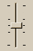
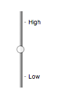

The input element
- Categories:
- Flow content.
- Phrasing content.
- If the
typeattribute is not in the Hidden state: Interactive content.- If the
typeattribute is not in the Hidden state: Listed, labelable, submittable, resettable, and autocapitalize-and-autocorrect inheriting form-associated element.- If the
typeattribute is in the Hidden state: Listed, submittable, resettable, and autocapitalize-and-autocorrect inheriting form-associated element.- If the
typeattribute is not in the Hidden state: Palpable content. - Phrasing content.
- Contexts in which this element can be used:
- Where phrasing content is expected.
- Content model:
- Nothing.
- Tag omission in text/html:
- No end tag.
- Content attributes:
- Global attributes
accept— Hint for expected file type in file upload controlsalpha— Allow the color's alpha component to be setalt— Replacement text for use when images are not availableautocomplete— Hint for form autofill featurechecked— Whether the control is checkedcolorspace— The color space of the serialized colordirname— Name of form control to use for sending the element's directionality in form submissiondisabled— Whether the form control is disabledform— Associates the element with aformelementformaction— URL to use for form submissionformenctype— Entry list encoding type to use for form submissionformmethod— Variant to use for form submissionformnovalidate— Bypass form control validation for form submissionformtarget— Navigable for form submissionheight— Vertical dimensionlist— List of autocomplete optionsmax— Maximum valuemaxlength— Maximum length of valuemin— Minimum valueminlength— Minimum length of valuemultiple— Whether to allow multiple valuesname— Name of the element to use for form submission and in theform.elementsAPIpattern— Pattern to be matched by the form control's valueplaceholder— User-visible label to be placed within the form controlpopovertarget— Targets a popover element to toggle, show, or hidepopovertargetaction— Indicates whether a targeted popover element is to be toggled, shown, or hiddenreadonly— Whether to allow the value to be edited by the userrequired— Whether the control is required for form submissionsize— Size of the controlsrc— Address of the resourcestep— Granularity to be matched by the form control's valuetype— Type of form controlvalue— Value of the form controlwidth— Horizontal dimension- Also, the
titleattribute has special semantics on this element: Description of pattern (when used withpatternattribute) - Accessibility considerations:
typeattribute in the Hidden state: for authors; for implementers.typeattribute in the Text state: for authors; for implementers.typeattribute in the Search state: for authors; for implementers.typeattribute in the Telephone state: for authors; for implementers.typeattribute in the URL state: for authors; for implementers.typeattribute in the Email state: for authors; for implementers.typeattribute in the Password state: for authors; for implementers.typeattribute in the Date state: for authors; for implementers.typeattribute in the Month state: for authors; for implementers.typeattribute in the Week state: for authors; for implementers.typeattribute in the Time state: for authors; for implementers.typeattribute in the Local Date and Time state: for authors; for implementers.typeattribute in the Number state: for authors; for implementers.typeattribute in the Range state: for authors; for implementers.typeattribute in the Color state: for authors; for implementers.typeattribute in the Checkbox state: for authors; for implementers.typeattribute in the Radio Button state: for authors; for implementers.typeattribute in the File Upload state: for authors; for implementers.typeattribute in the Submit Button state: for authors; for implementers.typeattribute in the Image Button state: for authors; for implementers.typeattribute in the Reset Button state: for authors; for implementers.typeattribute in the Button state: for authors; for implementers.- DOM interface:
-
[Exposed=Window] interface HTMLInputElement : HTMLElement { [HTMLConstructor] constructor(); [CEReactions, Reflect] attribute DOMString accept; [CEReactions, Reflect] attribute boolean alpha; [CEReactions, Reflect] attribute DOMString alt; [CEReactions, ReflectSetter] attribute DOMString autocomplete; [CEReactions, Reflect="checked"] attribute boolean defaultChecked; attribute boolean checked; [CEReactions] attribute DOMString colorSpace; [CEReactions, Reflect] attribute DOMString dirName; [CEReactions, Reflect] attribute boolean disabled; readonly attribute HTMLFormElement? form; attribute FileList? files; [CEReactions, ReflectSetter] attribute USVString formAction; [CEReactions] attribute DOMString formEnctype; [CEReactions] attribute DOMString formMethod; [CEReactions, Reflect] attribute boolean formNoValidate; [CEReactions, Reflect] attribute DOMString formTarget; [CEReactions, ReflectSetter] attribute unsigned long height; attribute boolean indeterminate; readonly attribute HTMLDataListElement? list; [CEReactions, Reflect] attribute DOMString max; [CEReactions, ReflectNonNegative] attribute long maxLength; [CEReactions, Reflect] attribute DOMString min; [CEReactions, ReflectNonNegative] attribute long minLength; [CEReactions, Reflect] attribute boolean multiple; [CEReactions, Reflect] attribute DOMString name; [CEReactions, Reflect] attribute DOMString pattern; [CEReactions, Reflect] attribute DOMString placeholder; [CEReactions, Reflect] attribute boolean readOnly; [CEReactions, Reflect] attribute boolean required; [CEReactions, Reflect] attribute unsigned long size; [CEReactions, ReflectURL] attribute USVString src; [CEReactions, Reflect] attribute DOMString step; [CEReactions] attribute DOMString type; [CEReactions, Reflect="value"] attribute DOMString defaultValue; [CEReactions] attribute [LegacyNullToEmptyString] DOMString value; attribute object? valueAsDate; attribute unrestricted double valueAsNumber; [CEReactions, ReflectSetter] attribute unsigned long width; undefined stepUp(optional long n = 1); undefined stepDown(optional long n = 1); readonly attribute boolean willValidate; readonly attribute ValidityState validity; readonly attribute DOMString validationMessage; boolean checkValidity(); boolean reportValidity(); undefined setCustomValidity(DOMString error); readonly attribute NodeList? labels; undefined select(); attribute unsigned long? selectionStart; attribute unsigned long? selectionEnd; attribute DOMString? selectionDirection; undefined setRangeText(DOMString replacement); undefined setRangeText(DOMString replacement, unsigned long start, unsigned long end, optional SelectionMode selectionMode = "preserve"); undefined setSelectionRange(unsigned long start, unsigned long end, optional DOMString direction); undefined showPicker(); // also has obsolete members }; HTMLInputElement includes PopoverTargetAttributes;
The input element represents a typed data field, usually with a form
control to allow the user to edit the data.
The type attribute
controls the data type (and associated control) of the element. It is an enumerated
attribute with the following keywords and states:
| Keyword | State | Data type | Control type |
|---|---|---|---|
hidden
| Hidden | An arbitrary string | n/a |
text
| Text | Text with no line breaks | A text control |
search
| Search | Text with no line breaks | Search control |
tel
| Telephone | Text with no line breaks | A text control |
url
| URL | An absolute URL | A text control |
email
| An email address or list of email addresses | A text control | |
password
| Password | Text with no line breaks (sensitive information) | A text control that obscures data entry |
date
| Date | A date (year, month, day) with no time zone | A date control |
month
| Month | A date consisting of a year and a month with no time zone | A month control |
week
| Week | A date consisting of a week-year number and a week number with no time zone | A week control |
time
| Time | A time (hour, minute, seconds, fractional seconds) with no time zone | A time control |
datetime-local
| Local Date and Time | A date and time (year, month, day, hour, minute, second, fraction of a second) with no time zone | A date and time control |
number
| Number | A numerical value | A text control or spinner control |
range
| Range | A numerical value, with the extra semantic that the exact value is not important | A slider control or similar |
color
| Color | An sRGB color with 8-bit red, green, and blue components | A color picker |
checkbox
| Checkbox | A set of zero or more values from a predefined list | A checkbox |
radio
| Radio Button | An enumerated value | A radio button |
file
| File Upload | Zero or more files each with a MIME type and optionally a filename | A label and a button |
submit
| Submit Button | An enumerated value, with the extra semantic that it must be the last value selected and initiates form submission | A button |
image
| Image Button | A coordinate, relative to a particular image's size, with the extra semantic that it must be the last value selected and initiates form submission | Either a clickable image, or a button |
reset
| Reset Button | n/a | A button |
button
| Button | n/a | A button |
The attribute's missing value default and invalid value default are both the Text state.
Which of the
accept,
alpha,
alt,
autocomplete,
checked,
colorspace,
dirname,
formaction,
formenctype,
formmethod,
formnovalidate,
formtarget,
height,
list,
max,
maxlength,
min,
minlength,
multiple,
pattern,
placeholder,
readonly,
required,
size,
src,
step, and
width content attributes, the
checked,
files,
valueAsDate,
valueAsNumber, and
list IDL attributes, the
select() method, the
selectionStart,
selectionEnd, and
selectionDirection, IDL attributes, the
setRangeText() and
setSelectionRange() methods, the
stepUp() and
stepDown() methods, and the
input and
change events apply to an
input element depends on the state of its
type attribute.
The subsections that define each type also clearly define in normative "bookkeeping" sections
which of these feature apply, and which do not apply, to each type. The behavior of
these features depends on whether they apply or not, as defined in their various sections (q.v.
for content attributes, for APIs, for events).
The following table is non-normative and summarizes which of those content attributes, IDL attributes, methods, and events apply to each state:
| Hidden | Text, Search | Telephone, URL | Password | Date, Month, Week, Time | Local Date and Time | Number | Range | Color | Checkbox, Radio Button | File Upload | Submit Button | Image Button | Reset Button, Button | ||
|---|---|---|---|---|---|---|---|---|---|---|---|---|---|---|---|
| Content attributes | |||||||||||||||
accept
| · | · | · | · | · | · | · | · | · | · | · | Yes | · | · | · |
alpha
| · | · | · | · | · | · | · | · | · | Yes | · | · | · | · | · |
alt
| · | · | · | · | · | · | · | · | · | · | · | · | · | Yes | · |
autocomplete
| Yes | Yes | Yes | Yes | Yes | Yes | Yes | Yes | Yes | Yes | · | · | · | · | · |
checked
| · | · | · | · | · | · | · | · | · | · | Yes | · | · | · | · |
colorspace
| · | · | · | · | · | · | · | · | · | Yes | · | · | · | · | · |
dirname
| Yes | Yes | Yes | Yes | Yes | · | · | · | · | · | · | · | Yes | · | · |
formaction
| · | · | · | · | · | · | · | · | · | · | · | · | Yes | Yes | · |
formenctype
| · | · | · | · | · | · | · | · | · | · | · | · | Yes | Yes | · |
formmethod
| · | · | · | · | · | · | · | · | · | · | · | · | Yes | Yes | · |
formnovalidate
| · | · | · | · | · | · | · | · | · | · | · | · | Yes | Yes | · |
formtarget
| · | · | · | · | · | · | · | · | · | · | · | · | Yes | Yes | · |
height
| · | · | · | · | · | · | · | · | · | · | · | · | · | Yes | · |
list
| · | Yes | Yes | Yes | · | Yes | Yes | Yes | Yes | Yes | · | · | · | · | · |
max
| · | · | · | · | · | Yes | Yes | Yes | Yes | · | · | · | · | · | · |
maxlength
| · | Yes | Yes | Yes | Yes | · | · | · | · | · | · | · | · | · | · |
min
| · | · | · | · | · | Yes | Yes | Yes | Yes | · | · | · | · | · | · |
minlength
| · | Yes | Yes | Yes | Yes | · | · | · | · | · | · | · | · | · | · |
multiple
| · | · | · | Yes | · | · | · | · | · | · | · | Yes | · | · | · |
pattern
| · | Yes | Yes | Yes | Yes | · | · | · | · | · | · | · | · | · | · |
placeholder
| · | Yes | Yes | Yes | Yes | · | · | Yes | · | · | · | · | · | · | · |
popovertarget
| · | · | · | · | · | · | · | · | · | · | · | · | Yes | Yes | Yes |
popovertargetaction
| · | · | · | · | · | · | · | · | · | · | · | · | Yes | Yes | Yes |
readonly
| · | Yes | Yes | Yes | Yes | Yes | Yes | Yes | · | · | · | · | · | · | · |
required
| · | Yes | Yes | Yes | Yes | Yes | Yes | Yes | · | · | Yes | Yes | · | · | · |
size
| · | Yes | Yes | Yes | Yes | · | · | · | · | · | · | · | · | · | · |
src
| · | · | · | · | · | · | · | · | · | · | · | · | · | Yes | · |
step
| · | · | · | · | · | Yes | Yes | Yes | Yes | · | · | · | · | · | · |
width
| · | · | · | · | · | · | · | · | · | · | · | · | · | Yes | · |
| IDL attributes and methods | |||||||||||||||
checked
| · | · | · | · | · | · | · | · | · | · | Yes | · | · | · | · |
files
| · | · | · | · | · | · | · | · | · | · | · | Yes | · | · | · |
value
| default | value | value | value | value | value | value | value | value | value | default/on | filename | default | default | default |
valueAsDate
| · | · | · | · | · | Yes | · | · | · | · | · | · | · | · | · |
valueAsNumber
| · | · | · | · | · | Yes | Yes | Yes | Yes | · | · | · | · | · | · |
list
| · | Yes | Yes | Yes | · | Yes | Yes | Yes | Yes | Yes | · | · | · | · | · |
select()
| · | Yes | Yes | Yes† | Yes | Yes† | Yes† | Yes† | · | Yes† | · | Yes† | · | · | · |
selectionStart
| · | Yes | Yes | · | Yes | · | · | · | · | · | · | · | · | · | · |
selectionEnd
| · | Yes | Yes | · | Yes | · | · | · | · | · | · | · | · | · | · |
selectionDirection
| · | Yes | Yes | · | Yes | · | · | · | · | · | · | · | · | · | · |
setRangeText()
| · | Yes | Yes | · | Yes | · | · | · | · | · | · | · | · | · | · |
setSelectionRange()
| · | Yes | Yes | · | Yes | · | · | · | · | · | · | · | · | · | · |
stepDown()
| · | · | · | · | · | Yes | Yes | Yes | Yes | · | · | · | · | · | · |
stepUp()
| · | · | · | · | · | Yes | Yes | Yes | Yes | · | · | · | · | · | · |
| Events | |||||||||||||||
input event
| · | Yes | Yes | Yes | Yes | Yes | Yes | Yes | Yes | Yes | Yes | Yes | · | · | · |
change event
| · | Yes | Yes | Yes | Yes | Yes | Yes | Yes | Yes | Yes | Yes | Yes | · | · | · |
† If the control has no selectable text, the select() method results in a no-op, with no
"InvalidStateError" DOMException.
Some states of the type attribute define a value
sanitization algorithm.
Each input element has a value, which is
exposed by the value IDL attribute. Some states define an
algorithm to convert a string to a number,
an algorithm to convert a number to a
string, an algorithm to convert a string to a
Date object, and an algorithm to
convert a Date object to a string, which are used by max, min, step, valueAsDate,
valueAsNumber, and stepUp().
An input element's dirty value flag must be
set to true whenever the user interacts with the control in a way that changes the value. (It is also set to true when the value is programmatically
changed, as described in the definition of the value IDL
attribute.)
The value content
attribute gives the default value of the input
element. When the value content attribute is
added, set, or removed, if the control's dirty value flag
is false, the user agent must set the value of the element
to the value of the value content attribute, if there is
one, or the empty string otherwise, and then run the current value sanitization
algorithm, if one is defined.
Each input element has a checkedness,
which is exposed by the checked IDL attribute.
Each input element has a boolean dirty checkedness flag. When it is true, the
element is said to have a dirty checkedness.
The dirty checkedness flag must be initially
set to false when the element is created, and must be set to true whenever the user interacts with
the control in a way that changes the checkedness.
The checked
content attribute is a boolean attribute that gives the default checkedness of the input element. When the checked content attribute is added, if
the control does not have dirty checkedness, the user
agent must set the checkedness of the element to true;
when the checked content attribute is removed, if the
control does not have dirty checkedness, the user
agent must set the checkedness of the element to
false.
The reset algorithm for input
elements is to set its user validity,
dirty value flag, and
dirty checkedness flag
back to false, set the value of the element to the value
of the value content attribute, if there is one, or the
empty string otherwise, set the checkedness of the
element to true if the element has a checked content
attribute and false if it does not, empty the list of selected files, and then invoke the value
sanitization algorithm, if the type attribute's
current state defines one.
Each input element can be mutable. Except where
otherwise specified, an input element is always mutable. Similarly, except where otherwise specified, the user
agent should not allow the user to modify the element's value or checkedness.
The readonly attribute can also in some
cases (e.g. for the Date state, but not the Checkbox state) stop an input element from
being mutable.
The input element can support a picker. A
picker is a user interface element that allows the end user to choose a value. Whether an
input element supports a picker depends on the type attribute state and implementation-defined
behavior. An input element must support a picker when its type attribute is in the File
Upload state.
As of the time of this writing, typical browser implementations show such picker UI for:
inputelements whosetypeattributes are in the Date, Month, Week, Time, Local Date and Time, and Color states;inputelements in various states that have a suggestions source element;inputelements whosetypeattribute is in the File Upload state; andselectelements.
The cloning steps for input elements
given node, copy, and subtree are to propagate the value, dirty value flag,
checkedness, and dirty checkedness flag from node to
copy.
The activation behavior for input elements element, given
event, are these steps:
If element is not mutable, and element's
typeattribute is neither in the Checkbox nor in the Radio state, then return.Run element's input activation behavior, if any, and do nothing otherwise.
If element has a form owner and element's
typeattribute is not in the Button state, then return.Run the popover target attribute activation behavior given element and event's target.
Recall that an element's activation behavior runs for both
user-initiated activations and for synthetic activations (e.g., via el.click()). User agents might also have behaviors for a given control — not
specified here — that are triggered only by true user-initiated activations. A common choice is to
show the picker, if applicable, for the control. In contrast, the input
activation behavior only shows pickers for the special historical cases of the File Upload and Color states.
The legacy-pre-activation behavior for input elements are these
steps:
If this element's
typeattribute is in the Checkbox state, then set this element's checkedness to its opposite value (i.e. true if it is false, false if it is true) and set this element'sindeterminateIDL attribute to false.If this element's
typeattribute is in the Radio Button state, then get a reference to the element in this element's radio button group that has its checkedness set to true, if any, and then set this element's checkedness to true.
The legacy-canceled-activation behavior for input elements are these
steps:
If the element's
typeattribute is in the Checkbox state, then set the element's checkedness and the element'sindeterminateIDL attribute back to the values they had before the legacy-pre-activation behavior was run.If this element's
typeattribute is in the Radio Button state, then if the element to which a reference was obtained in the legacy-pre-activation behavior, if any, is still in what is now this element's radio button group, if it still has one, and if so, set that element's checkedness to true; or else, if there was no such element, or that element is no longer in this element's radio button group, or if this element no longer has a radio button group, set this element's checkedness to false.
When an input element is first created, the element's rendering and behavior must
be set to the rendering and behavior defined for the type
attribute's state, and the value sanitization algorithm, if one is defined for the
type attribute's state, must be invoked.
When an input element's type attribute
changes state, the user agent must run the following steps:
If the previous state of the element's
typeattribute put thevalueIDL attribute in the value mode, and the element's value is not the empty string, and the new state of the element'stypeattribute puts thevalueIDL attribute in either the default mode or the default/on mode, then set the element'svaluecontent attribute to the element's value.Otherwise, if the previous state of the element's
typeattribute put thevalueIDL attribute in any mode other than the value mode, and the new state of the element'stypeattribute puts thevalueIDL attribute in the value mode, then set the value of the element to the value of thevaluecontent attribute, if there is one, or the empty string otherwise, and then set the control's dirty value flag to false.Otherwise, if the previous state of the element's
typeattribute put thevalueIDL attribute in any mode other than the filename mode, and the new state of the element'stypeattribute puts thevalueIDL attribute in the filename mode, then set the value of the element to the empty string.Update the element's rendering and behavior to the new state's.
Signal a type change for the element. (The Radio Button state uses this, in particular.)
Invoke the value sanitization algorithm, if one is defined for the
typeattribute's new state.Let previouslySelectable be true if
setRangeText()previously applied to the element, and false otherwise.Let nowSelectable be true if
setRangeText()now applies to the element, and false otherwise.If previouslySelectable is false and nowSelectable is true, set the element's text entry cursor position to the beginning of the text control, and set its selection direction to "
none".
The name attribute represents the element's name.
The dirname attribute controls how the element's directionality is submitted.
The disabled attribute is used to make the control non-interactive and to prevent its value from being submitted.
The form attribute is used to explicitly associate the input element with its form owner.
The autocomplete attribute controls how the user agent provides autofill behavior.
The indeterminate IDL attribute must initially be set to
false. On getting, it must return the last value it was set to. On setting, it must be set to the
new value. It has no effect except for changing the appearance of checkbox controls.
The colorSpace IDL attribute must reflect the
colorspace content attribute, limited to only
known values. The type IDL attribute must reflect the respective
content attribute of the same name, limited to only known values.
The IDL attributes width and height must return the rendered width and height of the
image, in CSS pixels, if an image is being rendered; or
else the natural width and height of the image, in
CSS pixels, if an image is available but not being rendered; or else 0,
if no image is available. When the input
element's type attribute is not in the Image Button state, then no image is available. [CSS]
The willValidate, validity, and validationMessage IDL attributes, and the checkValidity(), reportValidity(), and setCustomValidity() methods, are part of the
constraint validation API. The labels IDL
attribute provides a list of the element's labels. The select(), selectionStart, selectionEnd, selectionDirection, setRangeText(), and setSelectionRange() methods and IDL attributes
expose the element's text selection. The disabled,
form, and name IDL attributes
are part of the element's forms API.
States of the type attribute
Hidden state (type=hidden)
When an input element's type attribute is in
the Hidden state, the rules in this section apply.
The input element represents a value that is not intended to be
examined or manipulated by the user.
Constraint validation: If an input element's type attribute is in the Hidden state, it is barred from constraint
validation.
If the name attribute is present and has a value that is an
ASCII case-insensitive match for "_charset_", then the element's value attribute must be omitted.
The
autocomplete and
dirname
content attributes apply to this element.
The
value
IDL attribute applies to this element and is
in mode default.
The following content attributes must not be specified and do not
apply to the element:
accept,
alpha,
alt,
checked,
colorspace,
formaction,
formenctype,
formmethod,
formnovalidate,
formtarget,
height,
list,
max,
maxlength,
min,
minlength,
multiple,
pattern,
placeholder,
popovertarget,
popovertargetaction,
readonly,
required,
size,
src,
step, and
width.
The following IDL attributes and methods do not apply to the
element:
checked,
files,
list,
selectionStart,
selectionEnd,
selectionDirection,
valueAsDate, and
valueAsNumber IDL attributes;
select(),
setRangeText(),
setSelectionRange(),
stepDown(), and
stepUp() methods.
The input and change events do not apply.
Text (type=text) state and Search state (type=search)
When an input element's type attribute is in
the Text state or the Search state, the rules in this section apply.
The input element represents a one line plain text edit control for
the element's value.
The difference between the Text state and the Search state is primarily stylistic: on platforms where search controls are distinguished from regular text controls, the Search state might result in an appearance consistent with the platform's search controls rather than appearing like a regular text control.
If the element is mutable, its value should be editable by the user. User agents must not allow users to insert U+000A LINE FEED (LF) or U+000D CARRIAGE RETURN (CR) characters into the element's value.
If the element is mutable, the user agent should allow the user to change the writing direction of the element, setting it either to a left-to-right writing direction or a right-to-left writing direction. If the user does so, the user agent must then run the following steps:
Set the element's
dirattribute to "ltr" if the user selected a left-to-right writing direction, and "rtl" if the user selected a right-to-left writing direction.Queue an element task on the user interaction task source given the element to fire an event named
inputat the element, with thebubblesandcomposedattributes initialized to true.
The value attribute, if specified, must have a value that
contains no U+000A LINE FEED (LF) or U+000D CARRIAGE RETURN (CR) characters.
The value sanitization algorithm is as follows: Strip newlines from the value.
The following common input element content
attributes, IDL attributes, and methods apply to the element:
autocomplete,
dirname,
list,
maxlength,
minlength,
pattern,
placeholder,
readonly,
required, and
size content attributes;
list,
selectionStart,
selectionEnd,
selectionDirection, and
value IDL attributes;
select(),
setRangeText(), and
setSelectionRange() methods.
The value IDL attribute is
in mode value.
The input and change events apply.
The following content attributes must not be specified and do not
apply to the element:
accept,
alpha,
alt,
checked,
colorspace,
formaction,
formenctype,
formmethod,
formnovalidate,
formtarget,
height,
max,
min,
multiple,
popovertarget,
popovertargetaction,
src,
step, and
width.
The following IDL attributes and methods do not apply to the
element:
checked,
files,
valueAsDate, and
valueAsNumber IDL attributes;
stepDown() and
stepUp() methods.
Telephone state (type=tel)
When an input element's type attribute is in
the Telephone state, the rules in this section apply.
The input element represents a control for editing a telephone number
given in the element's value.
If the element is mutable, its value should be editable by the user. User agents may change the spacing and, with care, the punctuation of values that the user enters. User agents must not allow users to insert U+000A LINE FEED (LF) or U+000D CARRIAGE RETURN (CR) characters into the element's value.
The value attribute, if specified, must have a value that
contains no U+000A LINE FEED (LF) or U+000D CARRIAGE RETURN (CR) characters.
The value sanitization algorithm is as follows: Strip newlines from the value.
Unlike the URL and Email types, the Telephone type does not enforce a particular syntax. This is
intentional; in practice, telephone number fields tend to be free-form fields, because there are a
wide variety of valid phone numbers. Systems that need to enforce a particular format are
encouraged to use the pattern attribute or the setCustomValidity() method to hook into the client-side
validation mechanism.
The following common input element content
attributes, IDL attributes, and methods apply to the element:
autocomplete,
dirname,
list,
maxlength,
minlength,
pattern,
placeholder,
readonly,
required, and
size content attributes;
list,
selectionStart,
selectionEnd,
selectionDirection, and
value IDL attributes;
select(),
setRangeText(), and
setSelectionRange() methods.
The value IDL attribute is
in mode value.
The input and change events apply.
The following content attributes must not be specified and do not
apply to the element:
accept,
alpha,
alt,
checked,
colorspace,
formaction,
formenctype,
formmethod,
formnovalidate,
formtarget,
height,
max,
min,
multiple,
popovertarget,
popovertargetaction,
src,
step, and
width.
The following IDL attributes and methods do not apply to the
element:
checked,
files,
valueAsDate, and
valueAsNumber IDL attributes;
stepDown() and
stepUp() methods.
URL state (type=url)
When an input element's type attribute is in
the URL state, the rules in this section apply.
The input element represents a control for editing a single
absolute URL given in the element's value.
If the element is mutable, the user agent should allow the user to change the URL represented by its value. User agents may allow the user to set the value to a string that is not a valid absolute URL, but may also or instead automatically escape characters entered by the user so that the value is always a valid absolute URL (even if that isn't the actual value seen and edited by the user in the interface). User agents should allow the user to set the value to the empty string. User agents must not allow users to insert U+000A LINE FEED (LF) or U+000D CARRIAGE RETURN (CR) characters into the value.
The value attribute, if specified and not empty, must
have a value that is a valid URL potentially surrounded by spaces that is also an
absolute URL.
The value sanitization algorithm is as follows: Strip newlines from the value, then strip leading and trailing ASCII whitespace from the value.
Constraint validation: While the value of the element is neither the empty string nor a valid absolute URL, the element is suffering from a type mismatch.
The following common input element content
attributes, IDL attributes, and methods apply to the element:
autocomplete,
dirname,
list,
maxlength,
minlength,
pattern,
placeholder,
readonly,
required, and
size content attributes;
list,
selectionStart,
selectionEnd,
selectionDirection, and
value IDL attributes;
select(),
setRangeText(), and
setSelectionRange() methods.
The value IDL attribute is
in mode value.
The input and change events apply.
The following content attributes must not be specified and do not
apply to the element:
accept,
alpha,
alt,
checked,
colorspace,
formaction,
formenctype,
formmethod,
formnovalidate,
formtarget,
height,
max,
min,
multiple,
popovertarget,
popovertargetaction,
src,
step, and
width.
The following IDL attributes and methods do not apply to the
element:
checked,
files,
valueAsDate, and
valueAsNumber IDL attributes;
stepDown() and
stepUp() methods.
If a document contained the following markup:
<input type="url" name="location" list="urls">
<datalist id="urls">
<option label="MIME: Format of Internet Message Bodies" value="https://www.rfc-editor.org/rfc/rfc2045">
<option label="HTML" value="https://html.spec.whatwg.org/">
<option label="DOM" value="https://dom.spec.whatwg.org/">
<option label="Fullscreen" value="https://fullscreen.spec.whatwg.org/">
<option label="Media Session" value="https://mediasession.spec.whatwg.org/">
<option label="The Single UNIX Specification, Version 3" value="http://www.unix.org/version3/">
</datalist>...and the user had typed "spec.w", and the user agent had also found that the user
had visited https://url.spec.whatwg.org/#url-parsing and https://streams.spec.whatwg.org/ in the recent past, then the rendering might look
like this:
The first four URLs in this sample consist of the four URLs in the author-specified list that match the text the user has entered, sorted in some implementation-defined manner (maybe by how frequently the user refers to those URLs). Note how the UA is using the knowledge that the values are URLs to allow the user to omit the scheme part and perform intelligent matching on the domain name.
The last two URLs (and probably many more, given the scrollbar's indications of more values being available) are the matches from the user agent's session history data. This data is not made available to the page DOM. In this particular case, the UA has no titles to provide for those values.
Email state (type=email)
When an input element's type attribute is in
the Email state, the rules in this section apply.
How the Email state operates depends on whether the
multiple attribute is specified or not.
- When the
multipleattribute is not specified on the element -
The
inputelement represents a control for editing an email address given in the element's value.If the element is mutable, the user agent should allow the user to change the email address represented by its value. User agents may allow the user to set the value to a string that is not a valid email address. The user agent should act in a manner consistent with expecting the user to provide a single email address. User agents should allow the user to set the value to the empty string. User agents must not allow users to insert U+000A LINE FEED (LF) or U+000D CARRIAGE RETURN (CR) characters into the value. User agents may transform the value for display and editing; in particular, user agents should convert punycode in the domain labels of the value to IDN in the display and vice versa.
Constraint validation: While the user interface is representing input that the user agent cannot convert to punycode, the control is suffering from bad input.
The
valueattribute, if specified and not empty, must have a value that is a single valid email address.The value sanitization algorithm is as follows: Strip newlines from the value, then strip leading and trailing ASCII whitespace from the value.
Constraint validation: While the value of the element is neither the empty string nor a single valid email address, the element is suffering from a type mismatch.
- When the
multipleattribute is specified on the element -
The
inputelement represents a control for adding, removing, and editing the email addresses given in the element's values.If the element is mutable, the user agent should allow the user to add, remove, and edit the email addresses represented by its values. User agents may allow the user to set any individual value in the list of values to a string that is not a valid email address, but must not allow users to set any individual value to a string containing U+002C COMMA (,), U+000A LINE FEED (LF), or U+000D CARRIAGE RETURN (CR) characters. User agents should allow the user to remove all the addresses in the element's values. User agents may transform the values for display and editing; in particular, user agents should convert punycode in the domain labels of the value to IDN in the display and vice versa.
Constraint validation: While the user interface describes a situation where an individual value contains a U+002C COMMA (,) or is representing input that the user agent cannot convert to punycode, the control is suffering from bad input.
Whenever the user changes the element's values, the user agent must run the following steps:
Let latest values be a copy of the element's values.
Strip leading and trailing ASCII whitespace from each value in latest values.
Set the element's value to the result of concatenating all the values in latest values, separating each value from the next by a single U+002C COMMA character (,), maintaining the list's order.
The
valueattribute, if specified, must have a value that is a valid email address list.The value sanitization algorithm is as follows:
Split on commas the element's value, strip leading and trailing ASCII whitespace from each resulting token, if any, and let the element's values be the (possibly empty) resulting list of (possibly empty) tokens, maintaining the original order.
Set the element's value to the result of concatenating the element's values, separating each value from the next by a single U+002C COMMA character (,), maintaining the list's order.
Constraint validation: While the value of the element is not a valid email address list, the element is suffering from a type mismatch.
When the multiple attribute is set or removed, the
user agent must run the value sanitization algorithm.
A valid email address is a string that matches the email production of the following ABNF, the character set for which is Unicode.
This ABNF implements the extensions described in RFC 1123. [ABNF] [RFC5322]
[RFC1034] [RFC1123]
email = 1*( atext / "." ) "@" label *( "." label )
label = let-dig [ [ ldh-str ] let-dig ] ; limited to a length of 63 characters by RFC 1034 section 3.5
atext = < as defined in RFC 5322 section 3.2.3 >
let-dig = < as defined in RFC 1034 section 3.5 >
ldh-str = < as defined in RFC 1034 section 3.5 >This requirement is a willful violation of RFC 5322, which defines a syntax for email addresses that is simultaneously too strict (before the "@" character), too vague (after the "@" character), and too lax (allowing comments, whitespace characters, and quoted strings in manners unfamiliar to most users) to be of practical use here.
The following JavaScript- and Perl-compatible regular expression is an implementation of the above definition.
/^[a-zA-Z0-9.!#$%&'*+\/=?^_`{|}~-]+@[a-zA-Z0-9](?:[a-zA-Z0-9-]{0,61}[a-zA-Z0-9])?(?:\.[a-zA-Z0-9](?:[a-zA-Z0-9-]{0,61}[a-zA-Z0-9])?)*$/
A valid email address list is a set of comma-separated tokens, where each token is itself a valid email address. To obtain the list of tokens from a valid email address list, an implementation must split the string on commas.
The following common input element content
attributes, IDL attributes, and methods apply to the element:
autocomplete,
dirname,
list,
maxlength,
minlength,
multiple,
pattern,
placeholder,
readonly,
required, and
size content attributes;
list and
value IDL attributes;
select() method.
The value IDL attribute is
in mode value.
The input and change events apply.
The following content attributes must not be specified and do not
apply to the element:
accept,
alpha,
alt,
checked,
colorspace,
formaction,
formenctype,
formmethod,
formnovalidate,
formtarget,
height,
max,
min,
popovertarget,
popovertargetaction,
src,
step, and
width.
The following IDL attributes and methods do not apply to the
element:
checked,
files,
selectionStart,
selectionEnd,
selectionDirection,
valueAsDate, and
valueAsNumber IDL attributes;
setRangeText(),
setSelectionRange(),
stepDown() and
stepUp() methods.
Password state (type=password)
When an input element's type attribute is in
the Password state, the rules in this section
apply.
The input element represents a one line plain text edit control for
the element's value. The user agent should obscure the value
so that people other than the user cannot see it.
If the element is mutable, its value should be editable by the user. User agents must not allow users to insert U+000A LINE FEED (LF) or U+000D CARRIAGE RETURN (CR) characters into the value.
The value attribute, if specified, must have a value that
contains no U+000A LINE FEED (LF) or U+000D CARRIAGE RETURN (CR) characters.
The value sanitization algorithm is as follows: Strip newlines from the value.
The following common input element content
attributes, IDL attributes, and methods apply to the element:
autocomplete,
dirname,
maxlength,
minlength,
pattern,
placeholder,
readonly,
required, and
size content attributes;
selectionStart,
selectionEnd,
selectionDirection, and
value IDL attributes;
select(),
setRangeText(), and
setSelectionRange() methods.
The value IDL attribute is
in mode value.
The input and change events apply.
The following content attributes must not be specified and do not
apply to the element:
accept,
alpha,
alt,
checked,
colorspace,
formaction,
formenctype,
formmethod,
formnovalidate,
formtarget,
height,
list,
max,
min,
multiple,
popovertarget,
popovertargetaction,
src,
step, and
width.
The following IDL attributes and methods do not apply to the
element:
checked,
files,
list,
valueAsDate, and
valueAsNumber IDL attributes;
stepDown() and
stepUp() methods.
Date state (type=date)
When an input element's type attribute is in
the Date state, the rules in this section apply.
The input element represents a control for setting the element's
value to a string representing a specific date.
If the element is mutable, the user agent should allow the user to change the date represented by its value, as obtained by parsing a date from it. User agents must not allow the user to set the value to a non-empty string that is not a valid date string. If the user agent provides a user interface for selecting a date, then the value must be set to a valid date string representing the user's selection. User agents should allow the user to set the value to the empty string.
Constraint validation: While the user interface describes input that the user agent cannot convert to a valid date string, the control is suffering from bad input.
See the introduction section for a discussion of the difference between the input format and submission format for date, time, and number form controls, and the implementation notes regarding localization of form controls.
The value attribute, if specified and not empty, must
have a value that is a valid date string.
The value sanitization algorithm is as follows: If the value of the element is not a valid date string, then set it to the empty string instead.
The min attribute, if specified, must have a value that is
a valid date string. The max attribute, if
specified, must have a value that is a valid date string.
The step attribute is expressed in days. The step scale factor is 86,400,000
(which converts the days to milliseconds, as used in the other algorithms). The default step is 1 day.
When the element is suffering from a step mismatch, the user agent may round the element's value to the nearest date for which the element would not suffer from a step mismatch.
The algorithm to convert a string to a
number, given a string input, is as follows: If parsing a date from input results in an
error, then return an error; otherwise, return the number of milliseconds elapsed from midnight
UTC on the morning of 1970-01-01 (the time represented by the value "1970-01-01T00:00:00.0Z") to midnight UTC on the morning of the parsed date, ignoring leap seconds.
The algorithm to convert a number to a
string, given a number input, is as follows: Return a
valid date string that represents the date that, in
UTC, is current input milliseconds after midnight UTC on the morning of
1970-01-01 (the time represented by the value "1970-01-01T00:00:00.0Z").
The algorithm to convert a string to a
Date object, given a string input, is as follows:
If parsing a date from input results
in an error, then return an error; otherwise, return a new
Date object representing midnight UTC on the morning of the parsed date.
The algorithm to convert a
Date object to a string, given a Date object input, is
as follows: Return a valid date string that represents the date current at the time represented by input in the UTC
time zone.
The Date state (and other date- and time-related states described in subsequent sections) is not intended for the entry of values for which a precise date and time relative to the contemporary calendar cannot be established. For example, it would be inappropriate for the entry of times like "one millisecond after the big bang", "the early part of the Jurassic period", or "a winter around 250 BCE".
For the input of dates before the introduction of the Gregorian calendar, authors are
encouraged to not use the Date state (and the other
date- and time-related states described in subsequent sections), as user agents are not required
to support converting dates and times from earlier periods to the Gregorian calendar, and asking
users to do so manually puts an undue burden on users. (This is complicated by the manner in
which the Gregorian calendar was phased in, which occurred at different times in different
countries, ranging from partway through the 16th century all the way to early in the 20th.)
Instead, authors are encouraged to provide fine-grained input controls using the
select element and input elements with the Number state.
The following common input element content
attributes, IDL attributes, and methods apply to the element:
autocomplete,
list,
max,
min,
readonly,
required, and
step content attributes;
list,
value,
valueAsDate, and
valueAsNumber IDL attributes;
select(),
stepDown(), and
stepUp() methods.
The value IDL attribute is
in mode value.
The input and change events apply.
The following content attributes must not be specified and do not
apply to the element:
accept,
alpha,
alt,
checked,
colorspace,
dirname,
formaction,
formenctype,
formmethod,
formnovalidate,
formtarget,
height,
maxlength,
minlength,
multiple,
pattern,
placeholder,
popovertarget,
popovertargetaction,
size,
src, and
width.
The following IDL attributes and methods do not apply to the
element:
checked,
selectionStart,
selectionEnd, and
selectionDirection IDL attributes;
setRangeText(), and
setSelectionRange() methods.
Month state (type=month)
When an input element's type attribute is in
the Month state, the rules in this section apply.
The input element represents a control for setting the element's
value to a string representing a specific month.
If the element is mutable, the user agent should allow the user to change the month represented by its value, as obtained by parsing a month from it. User agents must not allow the user to set the value to a non-empty string that is not a valid month string. If the user agent provides a user interface for selecting a month, then the value must be set to a valid month string representing the user's selection. User agents should allow the user to set the value to the empty string.
Constraint validation: While the user interface describes input that the user agent cannot convert to a valid month string, the control is suffering from bad input.
See the introduction section for a discussion of the difference between the input format and submission format for date, time, and number form controls, and the implementation notes regarding localization of form controls.
The value attribute, if specified and not empty, must
have a value that is a valid month string.
The value sanitization algorithm is as follows: If the value of the element is not a valid month string, then set it to the empty string instead.
The min attribute, if specified, must have a value that is
a valid month string. The max attribute, if
specified, must have a value that is a valid month string.
The step attribute is expressed in months. The step scale factor is 1 (there is no
conversion needed as the algorithms use months). The default step is 1 month.
When the element is suffering from a step mismatch, the user agent may round the element's value to the nearest month for which the element would not suffer from a step mismatch.
The algorithm to convert a string to a number, given a string input, is as follows: If parsing a month from input results in an error, then return an error; otherwise, return the number of months between January 1970 and the parsed month.
The algorithm to convert a number to a string, given a number input, is as follows: Return a valid month string that represents the month that has input months between it and January 1970.
The algorithm to convert a string to a
Date object, given a string input, is as follows:
If parsing a month from input
results in an error, then return an error; otherwise, return a
new Date object representing midnight UTC on the morning of the first day of
the parsed month.
The algorithm to convert a
Date object to a string, given a Date object input, is
as follows: Return a valid month string that represents the month current at the time represented by input in the UTC
time zone.
The following common input element content
attributes, IDL attributes, and methods apply to the element:
autocomplete,
list,
max,
min,
readonly,
required, and
step content attributes;
list,
value,
valueAsDate, and
valueAsNumber IDL attributes;
select(),
stepDown(), and
stepUp() methods.
The value IDL attribute is
in mode value.
The input and change events apply.
The following content attributes must not be specified and do not
apply to the element:
accept,
alpha,
alt,
checked,
colorspace,
dirname,
formaction,
formenctype,
formmethod,
formnovalidate,
formtarget,
height,
maxlength,
minlength,
multiple,
pattern,
placeholder,
popovertarget,
popovertargetaction,
size,
src, and
width.
The following IDL attributes and methods do not apply to the
element:
checked,
files,
selectionStart,
selectionEnd, and
selectionDirection IDL attributes;
setRangeText(), and
setSelectionRange() methods.
Week state (type=week)
When an input element's type attribute is in
the Week state, the rules in this section apply.
The input element represents a control for setting the element's
value to a string representing a specific week.
If the element is mutable, the user agent should allow the user to change the week represented by its value, as obtained by parsing a week from it. User agents must not allow the user to set the value to a non-empty string that is not a valid week string. If the user agent provides a user interface for selecting a week, then the value must be set to a valid week string representing the user's selection. User agents should allow the user to set the value to the empty string.
Constraint validation: While the user interface describes input that the user agent cannot convert to a valid week string, the control is suffering from bad input.
See the introduction section for a discussion of the difference between the input format and submission format for date, time, and number form controls, and the implementation notes regarding localization of form controls.
The value attribute, if specified and not empty, must
have a value that is a valid week string.
The value sanitization algorithm is as follows: If the value of the element is not a valid week string, then set it to the empty string instead.
The min attribute, if specified, must have a value that is
a valid week string. The max attribute, if
specified, must have a value that is a valid week string.
The step attribute is expressed in weeks. The step scale factor is 604,800,000
(which converts the weeks to milliseconds, as used in the other algorithms). The default step is 1 week. The default step base is −259,200,000 (the start
of week 1970-W01).
When the element is suffering from a step mismatch, the user agent may round the element's value to the nearest week for which the element would not suffer from a step mismatch.
The algorithm to convert a string to a
number, given a string input, is as follows: If parsing a week string from input results in
an error, then return an error; otherwise, return the number of milliseconds elapsed from midnight
UTC on the morning of 1970-01-01 (the time represented by the value "1970-01-01T00:00:00.0Z") to midnight UTC on the morning of the Monday of the
parsed week, ignoring leap seconds.
The algorithm to convert a number to a
string, given a number input, is as follows: Return a
valid week string that represents the week that, in
UTC, is current input milliseconds after midnight UTC on the morning of
1970-01-01 (the time represented by the value "1970-01-01T00:00:00.0Z").
The algorithm to convert a string to a
Date object, given a string input, is as follows: If parsing a week from input results in an error, then
return an error; otherwise, return a new Date
object representing midnight UTC on the morning of the Monday of the parsed week.
The algorithm to convert a
Date object to a string, given a Date object input, is
as follows: Return a valid week string that represents the week current at the time represented by input in the UTC
time zone.
The following common input element content attributes, IDL attributes, and
methods apply to the element:
autocomplete,
list,
max,
min,
readonly,
required, and
step content attributes;
list,
value,
valueAsDate, and
valueAsNumber IDL attributes;
select(),
stepDown(), and
stepUp() methods.
The value IDL attribute is in mode value.
The input and change events apply.
The following content attributes must not be specified and do not apply to the
element:
accept,
alpha,
alt,
checked,
colorspace,
dirname,
formaction,
formenctype,
formmethod,
formnovalidate,
formtarget,
height,
maxlength,
minlength,
multiple,
pattern,
placeholder,
popovertarget,
popovertargetaction,
size,
src, and
width.
The following IDL attributes and methods do not apply to the element:
checked,
files,
selectionStart,
selectionEnd, and
selectionDirection IDL attributes;
setRangeText(), and
setSelectionRange() methods.
Time state (type=time)
When an input element's type attribute is in
the Time state, the rules in this section apply.
The input element represents a control for setting the element's
value to a string representing a specific time.
If the element is mutable, the user agent should allow the user to change the time represented by its value, as obtained by parsing a time from it. User agents must not allow the user to set the value to a non-empty string that is not a valid time string. If the user agent provides a user interface for selecting a time, then the value must be set to a valid time string representing the user's selection. User agents should allow the user to set the value to the empty string.
Constraint validation: While the user interface describes input that the user agent cannot convert to a valid time string, the control is suffering from bad input.
See the introduction section for a discussion of the difference between the input format and submission format for date, time, and number form controls, and the implementation notes regarding localization of form controls.
The value attribute, if specified and not empty, must
have a value that is a valid time string.
The value sanitization algorithm is as follows: If the value of the element is not a valid time string, then set it to the empty string instead.
The form control has a periodic domain.
The min attribute, if specified, must have a value that is
a valid time string. The max attribute, if
specified, must have a value that is a valid time string.
The step attribute is expressed in seconds. The step scale factor is 1000 (which
converts the seconds to milliseconds, as used in the other algorithms). The default step is 60 seconds.
When the element is suffering from a step mismatch, the user agent may round the element's value to the nearest time for which the element would not suffer from a step mismatch.
The algorithm to convert a string to a number, given a string input, is as follows: If parsing a time from input results in an error, then return an error; otherwise, return the number of milliseconds elapsed from midnight to the parsed time on a day with no time changes.
The algorithm to convert a number to a string, given a number input, is as follows: Return a valid time string that represents the time that is input milliseconds after midnight on a day with no time changes.
The algorithm to convert a string to a
Date object, given a string input, is as
follows: If parsing a time from
input results
in an error, then return an error; otherwise, return a new
Date object representing the parsed time in
UTC on 1970-01-01.
The algorithm to convert a
Date object to a string, given a Date object input, is
as follows: Return a valid time string that represents the UTC time component that is represented by input.
The following common input element content attributes, IDL attributes, and
methods apply to the element:
autocomplete,
list,
max,
min,
readonly,
required, and
step content attributes;
list,
value,
valueAsDate, and
valueAsNumber IDL attributes;
select(),
stepDown(), and
stepUp() methods.
The value IDL attribute is in mode value.
The input and change events apply.
The following content attributes must not be specified and do not apply to the
element:
accept,
alpha,
alt,
checked,
colorspace,
dirname,
formaction,
formenctype,
formmethod,
formnovalidate,
formtarget,
height,
maxlength,
minlength,
multiple,
pattern,
placeholder,
popovertarget,
popovertargetaction,
size,
src, and
width.
The following IDL attributes and methods do not apply to the element:
checked,
files,
selectionStart,
selectionEnd, and
selectionDirection IDL attributes;
setRangeText(), and
setSelectionRange() methods.
Local Date and Time state (type=datetime-local)
When an input element's type attribute is in
the Local Date and Time state, the rules in
this section apply.
The input element represents a control for setting the element's
value to a string representing a local date and time, with no time-zone offset
information.
If the element is mutable, the user agent should allow the user to change the date and time represented by its value, as obtained by parsing a date and time from it. User agents must not allow the user to set the value to a non-empty string that is not a valid normalized local date and time string. If the user agent provides a user interface for selecting a local date and time, then the value must be set to a valid normalized local date and time string representing the user's selection. User agents should allow the user to set the value to the empty string.
Constraint validation: While the user interface describes input that the user agent cannot convert to a valid normalized local date and time string, the control is suffering from bad input.
See the introduction section for a discussion of the difference between the input format and submission format for date, time, and number form controls, and the implementation notes regarding localization of form controls.
The value attribute, if specified and not empty, must
have a value that is a valid local date and time string.
The value sanitization algorithm is as follows: If the value of the element is a valid local date and time string, then set it to a valid normalized local date and time string representing the same date and time; otherwise, set it to the empty string instead.
The min attribute, if specified, must have a value that is
a valid local date and time string. The max
attribute, if specified, must have a value that is a valid local date and time
string.
The step attribute is expressed in seconds. The step scale factor is 1000 (which
converts the seconds to milliseconds, as used in the other algorithms). The default step is 60 seconds.
When the element is suffering from a step mismatch, the user agent may round the element's value to the nearest local date and time for which the element would not suffer from a step mismatch.
The algorithm to convert a string to a
number, given a string input, is as follows: If parsing a date and time from input results in an error, then return an error; otherwise, return the number of
milliseconds elapsed from midnight on the morning of 1970-01-01 (the time represented by the value
"1970-01-01T00:00:00.0") to the parsed local date and time, ignoring leap seconds.
The algorithm to convert a number to a
string, given a number input, is as follows: Return a
valid normalized local date and time string that represents the date and time that is
input milliseconds after midnight on the morning of 1970-01-01 (the time
represented by the value "1970-01-01T00:00:00.0").
See the note on historical dates in the Date state section.
The following common input element content
attributes, IDL attributes, and methods apply to the element:
autocomplete,
list,
max,
min,
readonly,
required, and
step content attributes;
list,
value, and
valueAsNumber IDL attributes;
select(),
stepDown(), and
stepUp() methods.
The value IDL attribute is
in mode value.
The input and change events apply.
The following content attributes must not be specified and do not
apply to the element:
accept,
alpha,
alt,
checked,
colorspace,
dirname,
formaction,
formenctype,
formmethod,
formnovalidate,
formtarget,
height,
maxlength,
minlength,
multiple,
pattern,
placeholder,
popovertarget,
popovertargetaction,
size,
src, and
width.
The following IDL attributes and methods do not apply to the
element:
checked,
files,
selectionStart,
selectionEnd,
selectionDirection, and
valueAsDate IDL attributes;
setRangeText(), and
setSelectionRange() methods.
The following example shows part of a flight booking application. The application uses an
input element with its type attribute set to
datetime-local, and it then interprets the
given date and time in the time zone of the selected airport.
<fieldset>
<legend>Destination</legend>
<p><label>Airport: <input type=text name=to list=airports></label></p>
<p><label>Departure time: <input type=datetime-local name=totime step=3600></label></p>
</fieldset>
<datalist id=airports>
<option value=ATL label="Atlanta">
<option value=MEM label="Memphis">
<option value=LHR label="London Heathrow">
<option value=LAX label="Los Angeles">
<option value=FRA label="Frankfurt">
</datalist>Number state (type=number)
When an input element's type attribute is in
the Number state, the rules in this section apply.
The input element represents a control for setting the element's
value to a string representing a number.
If the element is mutable, the user agent should allow the user to change the number represented by its value, as obtained from applying the rules for parsing floating-point number values to it. User agents must not allow the user to set the value to a non-empty string that is not a valid floating-point number. If the user agent provides a user interface for selecting a number, then the value must be set to the best representation of the number representing the user's selection as a floating-point number. User agents should allow the user to set the value to the empty string.
Constraint validation: While the user interface describes input that the user agent cannot convert to a valid floating-point number, the control is suffering from bad input.
This specification does not define what user interface user agents are to use; user agent vendors are encouraged to consider what would best serve their users' needs. For example, a user agent in Persian or Arabic markets might support Persian and Arabic numeric input (converting it to the format required for submission as described above). Similarly, a user agent designed for Romans might display the value in Roman numerals rather than in decimal; or (more realistically) a user agent designed for the French market might display the value with apostrophes between thousands and commas before the decimals, and allow the user to enter a value in that manner, internally converting it to the submission format described above.
The value attribute, if specified and not empty, must
have a value that is a valid floating-point number.
The value sanitization algorithm is as follows: If the value of the element is not a valid floating-point number, then set it to the empty string instead.
The min attribute, if specified, must have a value that is
a valid floating-point number. The max attribute,
if specified, must have a value that is a valid floating-point number.
The step scale factor is 1. The default step is 1 (allowing only integers to be selected by the user, unless the step base has a non-integer value).
When the element is suffering from a step mismatch, the user agent may round the element's value to the nearest number for which the element would not suffer from a step mismatch. If there are two such numbers, user agents are encouraged to pick the one nearest positive infinity.
The algorithm to convert a string to a number, given a string input, is as follows: If applying the rules for parsing floating-point number values to input results in an error, then return an error; otherwise, return the resulting number.
The algorithm to convert a number to a string, given a number input, is as follows: Return a valid floating-point number that represents input.
The following common input element content attributes, IDL attributes, and
methods apply to the element:
autocomplete,
list,
max,
min,
placeholder,
readonly,
required, and
step content attributes;
list,
value, and
valueAsNumber IDL attributes;
select(),
stepDown(), and
stepUp() methods.
The value IDL attribute is in mode value.
The input and change events apply.
The following content attributes must not be specified and do not apply to the
element:
accept,
alpha,
alt,
checked,
colorspace,
dirname,
formaction,
formenctype,
formmethod,
formnovalidate,
formtarget,
height,
maxlength,
minlength,
multiple,
pattern,
popovertarget,
popovertargetaction,
size,
src, and
width.
The following IDL attributes and methods do not apply to the element:
checked,
files,
selectionStart,
selectionEnd,
selectionDirection, and
valueAsDate IDL attributes;
setRangeText(), and
setSelectionRange() methods.
Here is an example of using a numeric input control:
<label>How much do you want to charge? $<input type=number min=0 step=0.01 name=price></label>As described above, a user agent might support numeric input in the user's local format, converting it to the format required for submission as described above. This might include handling grouping separators (as in "872,000,000,000") and various decimal separators (such as "3,99" vs "3.99") or using local digits (such as those in Arabic, Devanagari, Persian, and Thai).
The type=number state
is not appropriate for input that happens to only consist of numbers but isn't strictly speaking a
number. For example, it would be inappropriate for credit card numbers or US postal codes. A
simple way of determining whether to use type=number is to consider whether
it would make sense for the input control to have a spinbox interface (e.g. with "up" and "down"
arrows). Getting a credit card number wrong by 1 in the last digit isn't a minor mistake, it's as
wrong as getting every digit incorrect. So it would not make sense for the user to select a credit
card number using "up" and "down" buttons. When a spinbox interface is not appropriate, type=text is probably the right choice (possibly with an inputmode or pattern
attribute).
Range state (type=range)
When an input element's type attribute is in
the Range state, the rules in this section apply.
The input element represents a control for setting the element's
value to a string representing a number, but with the
caveat that the exact value is not important, letting UAs provide a simpler interface than they
do for the Number state.
If the element is mutable, the user agent should allow the user to change the number represented by its value, as obtained from applying the rules for parsing floating-point number values to it. User agents must not allow the user to set the value to a string that is not a valid floating-point number. If the user agent provides a user interface for selecting a number, then the value must be set to a best representation of the number representing the user's selection as a floating-point number. User agents must not allow the user to set the value to the empty string.
Constraint validation: While the user interface describes input that the user agent cannot convert to a valid floating-point number, the control is suffering from bad input.
The value attribute, if specified, must have a value
that is a valid floating-point number.
The value sanitization algorithm is as follows: If the value of the element is not a valid floating-point number, then set it to the best representation, as a floating-point number, of the default value.
The default value is the minimum plus half the difference between the minimum and the maximum, unless the maximum is less than the minimum, in which case the default value is the minimum.
When the element is suffering from an underflow, the user agent must set the element's value to the best representation, as a floating-point number, of the minimum.
When the element is suffering from an overflow, if the maximum is not less than the minimum, the user agent must set the element's value to a valid floating-point number that represents the maximum.
When the element is suffering from a step mismatch, the user agent must round the element's value to the nearest number for which the element would not suffer from a step mismatch, and which is greater than or equal to the minimum, and, if the maximum is not less than the minimum, which is less than or equal to the maximum, if there is a number that matches these constraints. If two numbers match these constraints, then user agents must use the one nearest to positive infinity.
For example, the markup
<input type="range" min=0 max=100 step=20 value=50>
results in a range control whose initial value is 60.
Here is an example of a range control using an autocomplete list with the list attribute. This could be useful if there are values along
the full range of the control that are especially important, such as preconfigured light levels
or typical speed limits in a range control used as a speed control. The following markup
fragment:
<input type="range" min="-100" max="100" value="0" step="10" name="power" list="powers">
<datalist id="powers">
<option value="0">
<option value="-30">
<option value="30">
<option value="++50">
</datalist>...with the following style sheet applied:
input { writing-mode: vertical-lr; height: 75px; width: 49px; background: #D5CCBB; color: black; }...might render as:

Note how the UA determined the orientation of the control from the ratio of the
style-sheet-specified height and width properties. The colors were similarly derived from the
style sheet. The tick marks, however, were derived from the markup. In particular, the step attribute has not affected the placement of tick marks,
the UA deciding to only use the author-specified completion values and then adding longer tick
marks at the extremes.
Note also how the invalid value ++50 was ignored.
For another example, consider the following markup fragment:
<input name=x type=range min=100 max=700 step=9.09090909 value=509.090909>A user agent could display in a variety of ways, for instance:
Or, alternatively, for instance:
The user agent could pick which one to display based on the dimensions given in the style sheet. This would allow it to maintain the same resolution for the tick marks, despite the differences in width.
Finally, here is an example of a range control with two labeled values:
<input type="range" name="a" list="a-values">
<datalist id="a-values">
<option value="10" label="Low">
<option value="90" label="High">
</datalist>With styles that make the control draw vertically, it might look as follows:

In this state, the range and step constraints are enforced even during user input, and there is no way to set the value to the empty string.
The min attribute, if specified, must have a value that is
a valid floating-point number. The default
minimum is 0. The max attribute, if specified, must
have a value that is a valid floating-point number. The default maximum is 100.
The step scale factor is
1. The default step is 1 (allowing only
integers, unless the min attribute has a non-integer
value).
The algorithm to convert a string to a number, given a string input, is as follows: If applying the rules for parsing floating-point number values to input results in an error, then return an error; otherwise, return the resulting number.
The algorithm to convert a number to a string, given a number input, is as follows: Return the best representation, as a floating-point number, of input.
The following common input element content attributes, IDL attributes, and
methods apply to the element:
autocomplete,
list,
max,
min, and
step content attributes;
list,
value, and
valueAsNumber IDL attributes;
stepDown() and
stepUp() methods.
The value IDL attribute is in mode value.
The input and change events apply.
The following content attributes must not be specified and do not apply to the
element:
accept,
alpha,
alt,
checked,
colorspace,
dirname,
formaction,
formenctype,
formmethod,
formnovalidate,
formtarget,
height,
maxlength,
minlength,
multiple,
pattern,
placeholder,
popovertarget,
popovertargetaction,
readonly,
required,
size,
src, and
width.
The following IDL attributes and methods do not apply to the element:
checked,
files,
selectionStart,
selectionEnd,
selectionDirection, and
valueAsDate IDL attributes;
select(),
setRangeText(), and
setSelectionRange() methods.
Color state (type=color)
When an input element's type attribute is in
the Color state, the rules in this section apply.
The input element represents a color well control, for setting the
element's value to a string representing the serialization
of a CSS color.
In this state, there is always a CSS color picked, and there is no way for the end user to set the value to the empty string.
The alpha attribute
is a boolean attribute. If present, it indicates the CSS color's alpha component can
be manipulated by the end user and does not have to be fully opaque.
The colorspace
attribute indicates the color space of the serialized CSS color. It also hints at the desired user
interface for selecting a CSS color. It is an enumerated attribute with the following
keywords and states:
| Keyword | State | Brief description | |||
|---|---|---|---|---|---|
limited-srgb
| Limited sRGB | The CSS color is converted to the #123456" or "color(srgb 0 1 0 / 0.5)".
display-p3
Display P3
| The CSS color is converted to the | color(display-p3 1.84 -0.19 0.72 / 0.6)".
|
The attribute's missing value default and invalid value default are both the Limited sRGB state.
Whenever the element's alpha or colorspace attributes are changed, the user agent must run
update a color well control color given the element.
If the element is mutable, the user agent should allow the user to change the color represented by its value, as obtained from parsing it. User agents must not allow the user to set the value to a string that running update a color well control color for the element would not set it to. If the user agent provides a user interface for selecting a CSS color, then the value must be set to the result of serializing a color well control color given the element and the end user's selection.
The input activation behavior for such an element element is to show the picker, if applicable, for element.
Constraint validation: While the element's value is not the empty string and parsing it returns failure, the control is suffering from bad input.
The value attribute, if specified and not the empty
string, must have a value that is a CSS color.
The value sanitization algorithm is as follows: Run update a color well control color for the element.
To update a color well control color, given an element element:
Assert: element is an
inputelement whosetypeattribute is in the Color state.-
Let value be the result of running these steps:
If element's dirty value flag is true, then return the result of getting an attribute by namespace and local name given null, "
value", and element.Return element's value.
Let color be the result of parsing value.
If color is failure, then set color to opaque black.
Set element's value to the result of serializing a color well control color given element and color.
To serialize a color well control color, given an element element and a CSS color color:
Assert: element is an
inputelement whosetypeattribute is in the Color state.Let htmlCompatible be false.
If element's
alphaattribute is not specified, then set color's alpha component to be fully opaque.-
If element's
colorspaceattribute is in the Limited sRGB state:Set color to color converted to the
Round each of color's components so they are in the range 0 to 255, inclusive. Components are to be rounded towards +∞.
If element's
alphaattribute is not specified, then set htmlCompatible to true.This intentionally uses a different serialization path for compatibility with an earlier version of the color well control.
Otherwise, set color to color converted using the 'color()' function.
-
Otherwise:
Assert: element's
colorspaceattribute is in the Display P3 state.Set color to color converted to the
Return the result of serializing color. If htmlCompatible is true, then do so with HTML-compatible serialization requested.
The following common input element content attributes and IDL attributes apply to the element:
alpha,
autocomplete,
colorspace, and
list content attributes;
list and
value IDL attributes;
select() method.
The value IDL attribute is in mode value.
The input and change events apply.
The following content attributes must not be specified and do not apply to the
element:
accept,
alt,
checked,
dirname,
formaction,
formenctype,
formmethod,
formnovalidate,
formtarget,
height,
max,
maxlength,
min,
minlength,
multiple,
pattern,
placeholder,
popovertarget,
popovertargetaction,
readonly,
required,
size,
src,
step, and
width.
The following IDL attributes and methods do not apply to the element:
checked,
files,
selectionStart,
selectionEnd,
selectionDirection,
valueAsDate and,
valueAsNumber IDL attributes;
setRangeText(),
setSelectionRange(),
stepDown(), and
stepUp() methods.
Checkbox state (type=checkbox)
When an input element's type attribute is in
the Checkbox state, the rules in this section
apply.
The input element represents a two-state control that represents the
element's checkedness state. If the element's checkedness state is true, the control represents a positive
selection, and if it is false, a negative selection. If the element's indeterminate IDL attribute is set to true, then the
control's selection should be obscured as if the control was in a third, indeterminate, state.
The control is never a true tri-state control, even if the element's indeterminate IDL attribute is set to true. The indeterminate IDL attribute only gives the appearance of a
third state.
The input activation behavior is to run the following steps:
If the element is not connected, then return.
Fire an event named
inputat the element with thebubblesandcomposedattributes initialized to true.Fire an event named
changeat the element with thebubblesattribute initialized to true.
Constraint validation: If the element is required and its checkedness is false, then the element is suffering from being missing.
input.indeterminate [ = value ]-
When set, overrides the rendering of checkbox controls so that the current value is not visible.
The following common input element content attributes and IDL attributes apply to the element:
checked, and
required content attributes;
checked and
value IDL attributes.
The value IDL attribute is in mode default/on.
The input and change events apply.
The following content attributes must not be specified and do not apply to the
element:
accept,
alpha,
alt,
autocomplete,
colorspace,
dirname,
formaction,
formenctype,
formmethod,
formnovalidate,
formtarget,
height,
list,
max,
maxlength,
min,
minlength,
multiple,
pattern,
placeholder,
popovertarget,
popovertargetaction,
readonly,
size,
src,
step, and
width.
The following IDL attributes and methods do not apply to the element:
files,
list,
selectionStart,
selectionEnd,
selectionDirection,
valueAsDate, and
valueAsNumber IDL attributes;
select(),
setRangeText(),
setSelectionRange(),
stepDown(), and
stepUp() methods.
Radio Button state (type=radio)
When an input element's type attribute is in
the Radio Button state, the rules in this section
apply.
The input element represents a control that, when used in conjunction
with other input elements, forms a radio button group in which only one
control can have its checkedness state set to true. If
the element's checkedness state is true, the control
represents the selected control in the group, and if it is false, it indicates a control in the
group that is not selected.
The radio button group that contains an input element
a also contains all the other input elements b that fulfill all
of the following conditions:
- The
inputelement b'stypeattribute is in the Radio Button state. - Either a and b have the same form owner, or they both have no form owner.
- Both a and b are in the same tree.
- They both have a
nameattribute, theirnameattributes are not empty, and the value of a'snameattribute equals the value of b'snameattribute.
A tree must not contain an input element whose radio button group contains only that element.
When any of the following phenomena occur, if the element's checkedness state is true after the occurrence, the checkedness state of all the other elements in the same radio button group must be set to false:
- The element's checkedness state is set to true (for whatever reason).
- The element's
nameattribute is set, changed, or removed. - The element's form owner changes.
- A type change is signalled for the element.
- The element becomes connected.
The input activation behavior is to run the following steps:
If the element is not connected, then return.
Fire an event named
inputat the element with thebubblesandcomposedattributes initialized to true.Fire an event named
changeat the element with thebubblesattribute initialized to true.
Constraint validation: If an element in the radio button group is required, and all of the
input elements in the radio button group have a
checkedness that is false, then the element is
suffering from being missing.
The following example, for some reason, has specified that puppers are both required and disabled:
<form>
<p><label><input type="radio" name="dog-type" value="pupper" required disabled> Pupper</label>
<p><label><input type="radio" name="dog-type" value="doggo"> Doggo</label>
<p><button>Make your choice</button>
</form>If the user tries to submit this form without first selecting "Doggo", then both
input elements will be suffering from being missing, since an element
in the radio button group is required
(viz. the first element), and both of the elements in the radio button group have a false checkedness.
On the other hand, if the user selects "Doggo" and then submits the form, then neither
input element will be suffering from being missing, since while one of
them is required, not all of them have a false checkedness.
If none of the radio buttons in a radio button group are checked, then they will all be initially unchecked in the interface, until such time as one of them is checked (either by the user or by script).
The following common input element content attributes and IDL attributes apply to the element:
checked and
required content attributes;
checked and
value IDL attributes.
The value IDL attribute is in mode default/on.
The input and change events apply.
The following content attributes must not be specified and do not apply to the
element:
accept,
alpha,
alt,
autocomplete,
colorspace,
dirname,
formaction,
formenctype,
formmethod,
formnovalidate,
formtarget,
height,
list,
max,
maxlength,
min,
minlength,
multiple,
pattern,
placeholder,
popovertarget,
popovertargetaction,
readonly,
size,
src,
step, and
width.
The following IDL attributes and methods do not apply to the element:
files,
list,
selectionStart,
selectionEnd,
selectionDirection,
valueAsDate, and
valueAsNumber IDL attributes;
select(),
setRangeText(),
setSelectionRange(),
stepDown(), and
stepUp() methods.
File Upload state (type=file)
When an input element's type attribute is in
the File Upload state, the rules in this section
apply.
The input element represents a list of selected files, each file consisting of a
filename, a file type, and a file body (the contents of the file).
Filenames must not contain path components, even in the case that a user has selected an entire directory hierarchy or multiple files with the same name from different directories. Path components, for the purposes of the File Upload state, are those parts of filenames that are separated by U+005C REVERSE SOLIDUS character (\) characters.
Unless the multiple attribute is set, there must be
no more than one file in the list of selected
files.
The input activation behavior for such an element element is to show the picker, if applicable, for element.
If the element is mutable, the user agent should allow the user to change the files on the list in other ways also, e.g., adding or removing files by drag-and-drop. When the user does so, the user agent must update the file selection for the element.
If the element is not mutable, the user agent must not allow the user to change the element's selection.
To update the file selection for an element element:
-
Queue an element task on the user interaction task source given element and the following steps:
Update element's selected files so that it represents the user's selection.
Fire an event named
inputat theinputelement, with thebubblesandcomposedattributes initialized to true.Fire an event named
changeat theinputelement, with thebubblesattribute initialized to true.
Constraint validation: If the element is required and the list of selected files is empty, then the element is suffering from being missing.
The accept
attribute may be specified to provide user agents with a hint of what file types will be
accepted.
If specified, the attribute must consist of a set of comma-separated tokens, each of which must be an ASCII case-insensitive match for one of the following:
- The string "
audio/*" - Indicates that sound files are accepted.
- The string "
video/*" - Indicates that video files are accepted.
- The string "
image/*" - Indicates that image files are accepted.
- A valid MIME type string with no parameters
- Indicates that files of the specified type are accepted.
- A string whose first character is a U+002E FULL STOP character (.)
- Indicates that files with the specified file extension are accepted.
The tokens must not be ASCII case-insensitive matches for any of the other tokens (i.e. duplicates are not allowed). To obtain the list of tokens from the attribute, the user agent must split the attribute value on commas.
User agents may use the value of this attribute to display a more appropriate user interface
than a generic file picker. For instance, given the value image/*, a user
agent could offer the user the option of using a local camera or selecting a photograph from their
photo collection; given the value audio/*, a user agent could offer the user
the option of recording a clip using a headset microphone.
User agents should prevent the user from selecting files that are not accepted by one (or more) of these tokens.
Authors are encouraged to specify both any MIME types and any corresponding extensions when looking for data in a specific format.
For example, consider an application that converts Microsoft Word documents to Open Document Format files. Since Microsoft Word documents are described with a wide variety of MIME types and extensions, the site can list several, as follows:
<input type="file" accept=".doc,.docx,.xml,application/msword,application/vnd.openxmlformats-officedocument.wordprocessingml.document">On platforms that only use file extensions to describe file types, the extensions listed here can be used to filter the allowed documents, while the MIME types can be used with the system's type registration table (mapping MIME types to extensions used by the system), if any, to determine any other extensions to allow. Similarly, on a system that does not have filenames or extensions but labels documents with MIME types internally, the MIME types can be used to pick the allowed files, while the extensions can be used if the system has an extension registration table that maps known extensions to MIME types used by the system.
Extensions tend to be ambiguous (e.g. there are an untold number of formats
that use the ".dat" extension, and users can typically quite easily rename
their files to have a ".doc" extension even if they are not Microsoft Word
documents), and MIME types tend to be unreliable (e.g. many formats have no formally registered
types, and many formats are in practice labeled using a number of different MIME types). Authors
are reminded that, as usual, data received from a client should be treated with caution, as it may
not be in an expected format even if the user is not hostile and the user agent fully obeyed the
accept attribute's requirements.
For historical reasons, the value IDL attribute prefixes
the filename with the string "C:\fakepath\". Some legacy user agents
actually included the full path (which was a security vulnerability). As a result of this,
obtaining the filename from the value IDL attribute in a
backwards-compatible way is non-trivial. The following function extracts the filename in a
suitably compatible manner:
function extractFilename(path) {
if (path.substr(0, 12) == "C:\\fakepath\\")
return path.substr(12); // modern browser
var x;
x = path.lastIndexOf('/');
if (x >= 0) // Unix-based path
return path.substr(x+1);
x = path.lastIndexOf('\\');
if (x >= 0) // Windows-based path
return path.substr(x+1);
return path; // just the filename
}This can be used as follows:
<p><input type=file name=image onchange="updateFilename(this.value)"></p>
<p>The name of the file you picked is: <span id="filename">(none)</span></p>
<script>
function updateFilename(path) {
var name = extractFilename(path);
document.getElementById('filename').textContent = name;
}
</script>The following common input element content attributes and IDL attributes apply to the element:
accept,
multiple, and
required content attributes;
files and
value IDL attributes;
select() method.
The value IDL attribute is in mode filename.
The input and change events apply.
The following content attributes must not be specified and do not apply to the
element:
alpha,
alt,
autocomplete,
checked,
colorspace,
dirname,
formaction,
formenctype,
formmethod,
formnovalidate,
formtarget,
height,
list,
max,
maxlength,
min,
minlength,
pattern,
popovertarget,
popovertargetaction,
placeholder,
readonly,
size,
src,
step, and
width.
The element's value attribute must be omitted.
The following IDL attributes and methods do not apply to the element:
checked,
list,
selectionStart,
selectionEnd,
selectionDirection,
valueAsDate, and
valueAsNumber IDL attributes;
setRangeText(),
setSelectionRange(),
stepDown(), and
stepUp() methods.
Submit Button state (type=submit)
When an input element's type attribute is in
the Submit Button state, the rules in this section
apply.
 The
The input element represents a button that, when activated, submits the
form. If the element has a value attribute,
the button's label must be the value of that attribute; otherwise, it must be an
implementation-defined string that means "Submit" or some such. The element is
a button, specifically a submit button.
Since the default label is implementation-defined, and the width of the button typically depends on the button's label, the button's width can leak a few bits of fingerprintable information. These bits are likely to be strongly correlated to the identity of the user agent and the user's locale.
The element's optional value is the value of
the element's value attribute, if there is one; otherwise
null.
The element's input activation behavior given event is as follows:
If the element does not have a form owner, then return.
If the element's node document is not fully active, then return.
Submit the element's form owner from the element with userInvolvement set to event's user navigation involvement.
The formaction, formenctype, formmethod, formnovalidate, and formtarget attributes are attributes for form
submission.
The formnovalidate attribute can be
used to make submit buttons that do not trigger the constraint validation.
The following common input element content attributes and IDL attributes apply to the element:
dirname,
formaction,
formenctype,
formmethod,
formnovalidate,
formtarget,
popovertarget, and
popovertargetaction content
attributes; value IDL attribute.
The value IDL attribute is in mode default.
The following content attributes must not be specified and do not apply to the
element:
accept,
alpha,
alt,
autocomplete,
checked,
colorspace,
height,
list,
max,
maxlength,
min,
minlength,
multiple,
pattern,
placeholder,
readonly,
required,
size,
src,
step, and
width.
The following IDL attributes and methods do not apply to the element:
checked,
files,
list,
selectionStart,
selectionEnd,
selectionDirection,
valueAsDate, and
valueAsNumber IDL attributes;
select(),
setRangeText(),
setSelectionRange(),
stepDown(), and
stepUp() methods.
The input and change events do not apply.
Image Button state (type=image)
When an input element's type attribute is in
the Image Button state, the rules in this section
apply.
The input element represents either an image from which a user can
select a coordinate and submit the form, or alternatively a button from which the user can submit
the form. The element is a button, specifically a submit button.
The coordinate is sent to the server during form submission by sending two entries for the element, derived from the name
of the control but with ".x" and ".y" appended to
the name with the x and y components of the coordinate respectively.
The image is given by the src attribute. The src
attribute must be present, and must contain a valid non-empty URL potentially surrounded by
spaces referencing a non-interactive, optionally animated, image resource that is neither
paged nor scripted.
When any of these events occur:
- the
inputelement'stypeattribute is first set to the Image Button state (possibly when the element is first created), and thesrcattribute is present - the
inputelement'stypeattribute is changed back to the Image Button state, and thesrcattribute is present, and its value has changed since the last time thetypeattribute was in the Image Button state - the
inputelement'stypeattribute is in the Image Button state, and thesrcattribute is set or changed
then unless the user agent cannot support images, or its support for images has been disabled,
or the user agent only fetches images on demand, or the src
attribute's value is the empty string, run these steps:
Let url be the result of encoding-parsing a URL given the
srcattribute's value, relative to the element's node document.If url is failure, then return.
Let request be a new request whose URL is url, client is the element's node document's relevant settings object, destination is "
image", initiator type is "input", credentials mode is "include", and whose use-URL-credentials flag is set.-
Fetch request, with processResponseEndOfBody set to the following steps given response response:
If the download was successful and the image is available, queue an element task on the user interaction task source given the
inputelement to fire an event namedloadat theinputelement.Otherwise, if the fetching process fails without a response from the remote server, or completes but the image is not a valid or supported image, then queue an element task on the user interaction task source given the
inputelement to fire an event namederroron theinputelement.
Fetching the image must delay the load event of the element's node document until the task that is queued by the networking task source once the resource has been fetched (defined below) has been run.
If the image was successfully obtained, with no network errors, and the image's type is a supported image type, and the image is a valid image of that type, then the image is said to be available. If this is true before the image is completely downloaded, each task that is queued by the networking task source while the image is being fetched must update the presentation of the image appropriately.
The user agent should apply the image sniffing rules to determine the type of the image, with the image's associated Content-Type headers giving the official type. If these rules are not applied, then the type of the image must be the type given by the image's associated Content-Type headers.
User agents must not support non-image resources with the input element. User
agents must not run executable code embedded in the image resource. User agents must only display
the first page of a multipage resource. User agents must not allow the resource to act in an
interactive fashion, but should honor any animation in the resource.
The alt attribute
provides the textual label for the button for users and user agents who cannot use the image. The
alt attribute must be present, and must contain a non-empty
string giving the label that would be appropriate for an equivalent button if the image was
unavailable.
The input element supports dimension attributes.
If the src attribute is set, and the image is available and the user agent is configured to display that image,
then the element represents a control for selecting a coordinate from the image specified by the
src attribute. In that case, if the element is mutable, the user agent should allow the user to select this coordinate.
Otherwise, the element represents a submit button whose label is given by the
value of the alt attribute.
The element's input activation behavior given event is as follows:
If the element does not have a form owner, then return.
If the element's node document is not fully active, then return.
-
If the user activated the control while explicitly selecting a coordinate, then set the element's selected coordinate to that coordinate.
This is only possible under the conditions outlined above, when the element represents a control for selecting such a coordinate. Even then, the user might activate the control without explicitly selecting a coordinate.
Submit the element's form owner from the element with userInvolvement set to event's user navigation involvement.
The element's selected coordinate consists of an x-component and a y-component. It is initially (0, 0). The coordinates represent the position relative to the edge of the element's image, with the coordinate space having the positive x direction to the right, and the positive y direction downwards.
The x-component must be a valid integer representing a number x in the range −(borderleft+paddingleft) ≤ x ≤ width+borderright+paddingright, where width is the rendered width of the image, borderleft is the width of the border on the left of the image, paddingleft is the width of the padding on the left of the image, borderright is the width of the border on the right of the image, and paddingright is the width of the padding on the right of the image, with all dimensions given in CSS pixels.
The y-component must be a valid integer representing a number y in the range −(bordertop+paddingtop) ≤ y ≤ height+borderbottom+paddingbottom, where height is the rendered height of the image, bordertop is the width of the border above the image, paddingtop is the width of the padding above the image, borderbottom is the width of the border below the image, and paddingbottom is the width of the padding below the image, with all dimensions given in CSS pixels.
Where a border or padding is missing, its width is zero CSS pixels.
The formaction, formenctype, formmethod, formnovalidate, and formtarget attributes are attributes for form
submission.
image.width [ = value ]image.height [ = value ]-
These attributes return the actual rendered dimensions of the image, or 0 if the dimensions are not known.
They can be set, to change the corresponding content attributes.
The following common input element content attributes and IDL attributes apply to the element:
alt,
formaction,
formenctype,
formmethod,
formnovalidate,
formtarget,
height,
popovertarget,
popovertargetaction,
src, and
width content attributes;
value IDL attribute.
The value IDL attribute is in mode default.
The following content attributes must not be specified and do not apply to the
element:
accept,
alpha,
autocomplete,
checked,
colorspace,
dirname,
list,
max,
maxlength,
min,
minlength,
multiple,
pattern,
placeholder,
readonly,
required,
size, and
step.
The element's value attribute must be omitted.
The following IDL attributes and methods do not apply to the element:
checked,
files,
list,
selectionStart,
selectionEnd,
selectionDirection,
valueAsDate, and
valueAsNumber IDL attributes;
select(),
setRangeText(),
setSelectionRange(),
stepDown(), and
stepUp() methods.
The input and change events do not apply.
Many aspects of this state's behavior are similar to the behavior of the
img element. Readers are encouraged to read that section, where many of the same
requirements are described in more detail.
Take the following form:
<form action="process.cgi">
<input type=image src=map.png name=where alt="Show location list">
</form>If the user clicked on the image at coordinate (127,40) then the URL used to submit the form
would be "process.cgi?where.x=127&where.y=40".
(In this example, it's assumed that for users who don't see the map, and who instead just see a button labeled "Show location list", clicking the button will cause the server to show a list of locations to pick from instead of the map.)
Reset Button state (type=reset)
When an input element's type attribute is in
the Reset Button state, the rules in this section
apply.
 The
The input element represents a button that, when activated, resets the
form. If the element has a value attribute,
the button's label must be the value of that attribute; otherwise, it must be an
implementation-defined string that means "Reset" or some such. The element is
a button.
Since the default label is implementation-defined, and the width of the button typically depends on the button's label, the button's width can leak a few bits of fingerprintable information. These bits are likely to be strongly correlated to the identity of the user agent and the user's locale.
The element's input activation behavior is as follows:
If the element does not have a form owner, then return.
If the element's node document is not fully active, then return.
Reset the form owner from the element.
Constraint validation: The element is barred from constraint validation.
The value IDL attribute applies to this element and is in mode default.
The following common input element content attributes apply to the element:
popovertarget and
popovertargetaction.
The following content attributes must not be specified and do not apply to the
element:
accept,
alpha,
alt,
autocomplete,
checked,
colorspace,
dirname,
formaction,
formenctype,
formmethod,
formnovalidate,
formtarget,
height,
list,
max,
maxlength,
min,
minlength,
multiple,
pattern,
placeholder,
readonly,
required,
size,
src,
step, and
width.
The following IDL attributes and methods do not apply to the element:
checked,
files,
list,
selectionStart,
selectionEnd,
selectionDirection,
valueAsDate, and
valueAsNumber IDL attributes;
select(),
setRangeText(),
setSelectionRange(),
stepDown(), and
stepUp() methods.
The input and change events do not apply.
Button state (type=button)
When an input element's type attribute is in
the Button state, the rules in this section apply.
The input element represents a button with no default behavior. A
label for the button must be provided in the value
attribute, though it may be the empty string. If the element has a value attribute, the button's label must be the value of that
attribute; otherwise, it must be the empty string. The element is a button.
The element has no input activation behavior.
Constraint validation: The element is barred from constraint validation.
The value IDL attribute applies to this element and is in mode default.
The following common input element content attributes apply to the element:
popovertarget and
popovertargetaction.
The following content attributes must not be specified and do not apply to the
element:
accept,
alpha,
alt,
autocomplete,
checked,
colorspace,
dirname,
formaction,
formenctype,
formmethod,
formnovalidate,
formtarget,
height,
list,
max,
maxlength,
min,
minlength,
multiple,
pattern,
placeholder,
readonly,
required,
size,
src,
step, and
width.
The following IDL attributes and methods do not apply to the element:
checked,
files,
list,
selectionStart,
selectionEnd,
selectionDirection,
valueAsDate, and
valueAsNumber IDL attributes;
select(),
setRangeText(),
setSelectionRange(),
stepDown(), and
stepUp() methods.
The input and change events do not apply.
Implementation notes regarding localization of form controls
This section is non-normative.
The formats shown to the user in date, time, and number controls is independent of the format used for form submission.
Browsers are encouraged to use user interfaces that present dates, times, and numbers according
to the conventions of either the locale implied by the input element's
language or the user's preferred locale. Using the page's locale will ensure
consistency with page-provided data.
For example, it would be confusing to users if an American English page claimed that a Cirque De Soleil show was going to be showing on 02/03, but their browser, configured to use the British English locale, only showed the date 03/02 in the ticket purchase date picker. Using the page's locale would at least ensure that the date was presented in the same format everywhere. (There's still a risk that the user would end up arriving a month late, of course, but there's only so much that can be done about such cultural differences...)
Common input element attributes
These attributes only apply to an input
element if its type attribute is in a state whose definition
declares that the attribute applies. When an attribute
doesn't apply to an input element, user agents must
ignore the attribute, regardless of the requirements and definitions below.
The maxlength and minlength attributes
The maxlength
attribute, when it applies, is a
form control maxlength
attribute.
The minlength
attribute, when it applies, is a
form control minlength
attribute.
If the input element has a maximum allowed value length, then the
length of the value of the element's value
attribute must be less than or equal to the element's maximum allowed value
length.
The following extract shows how a messaging client's text entry could be arbitrarily restricted to a fixed number of characters, thus forcing any conversation through this medium to be terse and discouraging intelligent discourse.
<label>What are you doing? <input name=status maxlength=140></label>Here, a password is given a minimum length:
<p><label>Username: <input name=u required></label>
<p><label>Password: <input name=p required minlength=12></label>The size attribute
The size attribute
gives the number of characters that, in a visual rendering, the user agent is to allow the user to
see while editing the element's value.
The size attribute, if specified, must have a value that
is a valid non-negative integer greater than zero.
If the attribute is present, then its value must be parsed using the rules for parsing non-negative integers, and if the result is a number greater than zero, then the user agent should ensure that at least that many characters are visible.
The size IDL attribute is limited to only positive
numbers and has a default value of 20.
The readonly attribute
The readonly
attribute is a boolean attribute that controls whether or not the user can edit the
form control. When specified, the element is not mutable.
Constraint validation: If the readonly attribute is specified on an input
element, the element is barred from constraint validation.
The difference between disabled and readonly is that read-only controls can still function,
whereas disabled controls generally do not function as controls until they are enabled. This is
spelled out in more detail elsewhere in this specification with normative requirements that refer
to the disabled concept (for example, the element's
activation behavior, whether or not it is a focusable area, or when
constructing the entry list). Any other behavior related to user interaction with
disabled controls, such as whether text can be selected or copied, is not defined in this
standard.
Only text controls can be made read-only, since for other controls (such as checkboxes and
buttons) there is no useful distinction between being read-only and being disabled, so the
readonly attribute does not
apply.
In the following example, the existing product identifiers cannot be modified, but they are still displayed as part of the form, for consistency with the row representing a new product (where the identifier is not yet filled in).
<form action="products.cgi" method="post" enctype="multipart/form-data">
<table>
<tr> <th> Product ID <th> Product name <th> Price <th> Action
<tr>
<td> <input readonly="readonly" name="1.pid" value="H412">
<td> <input required="required" name="1.pname" value="Floor lamp Ulke">
<td> $<input required="required" type="number" min="0" step="0.01" name="1.pprice" value="49.99">
<td> <button formnovalidate="formnovalidate" name="action" value="delete:1">Delete</button>
<tr>
<td> <input readonly="readonly" name="2.pid" value="FG28">
<td> <input required="required" name="2.pname" value="Table lamp Ulke">
<td> $<input required="required" type="number" min="0" step="0.01" name="2.pprice" value="24.99">
<td> <button formnovalidate="formnovalidate" name="action" value="delete:2">Delete</button>
<tr>
<td> <input required="required" name="3.pid" value="" pattern="[A-Z0-9]+">
<td> <input required="required" name="3.pname" value="">
<td> $<input required="required" type="number" min="0" step="0.01" name="3.pprice" value="">
<td> <button formnovalidate="formnovalidate" name="action" value="delete:3">Delete</button>
</table>
<p> <button formnovalidate="formnovalidate" name="action" value="add">Add</button> </p>
<p> <button name="action" value="update">Save</button> </p>
</form>The required attribute
The required
attribute is a boolean attribute. When specified, the element is required.
Constraint validation: If the element is required, and its value
IDL attribute applies and is in the mode value, and the element is mutable, and the element's value is the empty string, then the element is suffering
from being missing.
The following form has two required fields, one for an email address and one for a password. It also has a third field that is only considered valid if the user types the same password in the password field and this third field.
<h1>Create new account</h1>
<form action="/newaccount" method=post
oninput="up2.setCustomValidity(up2.value != up.value ? 'Passwords do not match.' : '')">
<p>
<label for="username">Email address:</label>
<input id="username" type=email required name=un>
<p>
<label for="password1">Password:</label>
<input id="password1" type=password required name=up>
<p>
<label for="password2">Confirm password:</label>
<input id="password2" type=password name=up2>
<p>
<input type=submit value="Create account">
</form>For radio buttons, the required attribute is
satisfied if any of the radio buttons in the group is
selected. Thus, in the following example, any of the radio buttons can be checked, not just the
one marked as required:
<fieldset>
<legend>Did the movie pass the Bechdel test?</legend>
<p><label><input type="radio" name="bechdel" value="no-characters"> No, there are not even two female characters in the movie. </label>
<p><label><input type="radio" name="bechdel" value="no-names"> No, the female characters never talk to each other. </label>
<p><label><input type="radio" name="bechdel" value="no-topic"> No, when female characters talk to each other it's always about a male character. </label>
<p><label><input type="radio" name="bechdel" value="yes" required> Yes. </label>
<p><label><input type="radio" name="bechdel" value="unknown"> I don't know. </label>
</fieldset>To avoid confusion as to whether a radio button group is required or not, authors are encouraged to specify the attribute on all the radio buttons in a group. Indeed, in general, authors are encouraged to avoid having radio button groups that do not have any initially checked controls in the first place, as this is a state that the user cannot return to, and is therefore generally considered a poor user interface.
The multiple attribute
The multiple
attribute is a boolean attribute that indicates whether the user is to be allowed to
specify more than one value.
The following extract shows how an email client's "To" field could accept multiple email addresses.
<label>To: <input type=email multiple name=to></label>If the user had, amongst many friends in their user contacts database, two friends "Spider-Man" (with address "spider@parker.example.net") and "Scarlet Witch" (with address "scarlet@avengers.example.net"), then, after the user has typed "s", the user agent might suggest these two email addresses to the user.
The page could also link in the user's contacts database from the site:
<label>To: <input type=email multiple name=to list=contacts></label>
...
<datalist id="contacts">
<option value="hedral@damowmow.com">
<option value="pillar@example.com">
<option value="astrophy@cute.example">
<option value="astronomy@science.example.org">
</datalist>Suppose the user had entered "bob@example.net" into this text control, and then
started typing a second email address starting with "s". The user agent might show
both the two friends mentioned earlier, as well as the "astrophy" and "astronomy" values given in
the datalist element.
The following extract shows how an email client's "Attachments" field could accept multiple files for upload.
<label>Attachments: <input type=file multiple name=att></label>The pattern attribute
The pattern
attribute specifies a regular expression against which the control's value, or, when the multiple attribute applies and is set, the control's values, are to be checked.
If specified, the attribute's value must match the JavaScript Pattern[+UnicodeSetsMode, +N] production.
The compiled pattern regular expression of an input element, if it
exists, is a JavaScript RegExp object. It is determined as follows:
If the element does not have a
patternattribute specified, then return nothing. The element has no compiled pattern regular expression.Let pattern be the value of the
patternattribute of the element.Let regexpCompletion be RegExpCreate(pattern, "
v").-
If regexpCompletion is an abrupt completion, then return nothing. The element has no compiled pattern regular expression.
User agents are encouraged to log this error in a developer console, to aid debugging.
Let anchoredPattern be the string "
^(?:", followed by pattern, followed by ")$".Return ! RegExpCreate(anchoredPattern, "
v").
The reasoning behind these steps, instead of just using the value of the pattern attribute directly, is twofold. First, we want to
ensure that when matched against a string, the regular expression's start is anchored to the start
of the string and its end to the end of the string. Second, we want to ensure that the regular
expression is valid in standalone form, instead of only becoming valid after being surrounded by
the "^(?:" and ")$" anchors.
A RegExp object regexp matches a string input, if !
RegExpBuiltinExec(regexp, input) is not null.
Constraint validation: If the element's value is not the empty string, and either the element's multiple attribute is not specified or it does not apply to the input element given its type attribute's current state, and the element has a
compiled pattern regular expression but that regular expression does not match the element's value, then the element is suffering from a pattern
mismatch.
Constraint validation: If the element's value is not the empty string, and the element's multiple attribute is specified and applies to the input element, and the element has
a compiled pattern regular expression but that regular expression does not match each of the element's values, then the element is suffering from a pattern
mismatch.
When an input element has a pattern
attribute specified, authors should include a title attribute to give a description of the pattern. User
agents may use the contents of this attribute, if it is present, when informing the user that the
pattern is not matched, or at any other suitable time, such as in a tooltip or read out by
assistive technology when the control gains focus.
For example, the following snippet:
<label> Part number:
<input pattern="[0-9][A-Z]{3}" name="part"
title="A part number is a digit followed by three uppercase letters."/>
</label>...could cause the UA to display an alert such as:
A part number is a digit followed by three uppercase letters. You cannot submit this form when the field is incorrect.
When a control has a pattern attribute, the title attribute, if used, must describe the pattern. Additional
information could also be included, so long as it assists the user in filling in the control.
Otherwise, assistive technology would be impaired.
For instance, if the title attribute contained the caption of the control, assistive technology could end up saying something like The text you have entered does not match the required pattern. Birthday, which is not useful.
UAs may still show the title in non-error situations (for
example, as a tooltip when hovering over the control), so authors should be careful not to word
titles as if an error has necessarily occurred.
The min and max attributes
Some form controls can have explicit constraints applied limiting the allowed range of values that the user can provide. Normally, such a range would be linear and continuous. A form control can have a periodic domain, however, in which case the form control's broadest possible range is finite, and authors can specify explicit ranges within it that span the boundaries.
Specifically, the broadest range of a type=time control is midnight to midnight (24 hours), and
authors can set both continuous linear ranges (such as 9pm to 11pm) and discontinuous ranges
spanning midnight (such as 11pm to 1am).
The min and max attributes indicate the
allowed range of values for the element.
Their syntax is defined by the section that defines the type attribute's current state.
If the element has a min attribute, and the result of
applying the algorithm to convert a string to a
number to the value of the min attribute is a number,
then that number is the element's minimum; otherwise, if the
type attribute's current state defines a default minimum, then that is the minimum; otherwise, the element has no minimum.
The min attribute also defines the step base.
If the element has a max attribute, and the result of
applying the algorithm to convert a string to a
number to the value of the max attribute is a number,
then that number is the element's maximum; otherwise, if the
type attribute's current state defines a default maximum, then that is the maximum; otherwise, the element has no maximum.
If the element does not have a periodic domain, the
max attribute's value (the maximum) must not be less than the min attribute's value (its minimum).
If an element that does not have a periodic domain has a maximum that is less than its minimum, then so long as the element has a value, it will either be suffering from an underflow or suffering from an overflow.
An element has a reversed range if it has a periodic domain and its maximum is less than its minimum.
Constraint validation: When the element has a minimum and does not have a reversed range, and the result of applying the algorithm to convert a string to a number to the string given by the element's value is a number, and the number obtained from that algorithm is less than the minimum, the element is suffering from an underflow.
Constraint validation: When the element has a maximum and does not have a reversed range, and the result of applying the algorithm to convert a string to a number to the string given by the element's value is a number, and the number obtained from that algorithm is more than the maximum, the element is suffering from an overflow.
Constraint validation: When an element has a reversed range, and the result of applying the algorithm to convert a string to a number to the string given by the element's value is a number, and the number obtained from that algorithm is more than the maximum and less than the minimum, the element is simultaneously suffering from an underflow and suffering from an overflow.
The following date control limits input to dates that are before the 1980s:
<input name=bday type=date max="1979-12-31">The following number control limits input to whole numbers greater than zero:
<input name=quantity required="" type="number" min="1" value="1">The following time control limits input to those minutes that occur between 9pm and 6am, defaulting to midnight:
<input name="sleepStart" type=time min="21:00" max="06:00" step="60" value="00:00">The step attribute
The step attribute
indicates the granularity that is expected (and required) of the value or values, by
limiting the allowed values. The section that defines the type attribute's current state also defines the default step, the step scale factor, and in some cases the default step base, which are used in processing the
attribute as described below.
The step attribute, if specified, must either have a
value that is a valid floating-point number that parses to a number that is greater than zero, or must have a
value that is an ASCII case-insensitive match for the string "any".
The attribute provides the allowed value step for the element, as follows:
If the attribute does not apply, then there is no allowed value step.
Otherwise, if the attribute is absent, then the allowed value step is the default step multiplied by the step scale factor.
Otherwise, if the attribute's value is an ASCII case-insensitive match for the string "
any", then there is no allowed value step.Otherwise, if the rules for parsing floating-point number values, when they are applied to the attribute's value, return an error, zero, or a number less than zero, then the allowed value step is the default step multiplied by the step scale factor.
Otherwise, the allowed value step is the number returned by the rules for parsing floating-point number values when they are applied to the attribute's value, multiplied by the step scale factor.
The step base is the value returned by the following algorithm:
If the element has a
mincontent attribute, and the result of applying the algorithm to convert a string to a number to the value of themincontent attribute is not an error, then return that result.If the element has a
valuecontent attribute, and the result of applying the algorithm to convert a string to a number to the value of thevaluecontent attribute is not an error, then return that result.If a default step base is defined for this element given its
typeattribute's state, then return it.Return zero.
Constraint validation: When the element has an allowed value step, and the result of applying the algorithm to convert a string to a number to the string given by the element's value is a number, and that number subtracted from the step base is not an integral multiple of the allowed value step, the element is suffering from a step mismatch.
The following range control only accepts values in the range 0..1, and allows 256 steps in that range:
<input name=opacity type=range min=0 max=1 step=0.00392156863>The following control allows any time in the day to be selected, with any accuracy (e.g. thousandth-of-a-second accuracy or more):
<input name=favtime type=time step=any>Normally, time controls are limited to an accuracy of one minute.
The list attribute
The list attribute is
used to identify an element that lists predefined options suggested to the user.
If present, its value must be the ID of a datalist
element in the same tree.
The suggestions source element is the first element in
the tree in tree order to have an ID
equal to the value of the list attribute, if that element
is a datalist element. If there is no list
attribute, or if there is no element with that ID, or if the
first element with that ID is not a datalist
element, then there is no suggestions source
element.
If there is a suggestions source element, then, when
the user agent is allowing the user to edit the input element's value, the user agent should offer the suggestions represented by
the suggestions source element to the user in a manner
suitable for the type of control used. If appropriate, the user agent should use the suggestion's
label and value to identify the suggestion to the user.
User agents are encouraged to filter the suggestions represented by the suggestions source element when the number of suggestions is large, including only the most relevant ones (e.g. based on the user's input so far). No precise threshold is defined, but capping the list at four to seven values is reasonable. If filtering based on the user's input, user agents should search within both the label and value of the suggestions for matches. User agents should consider how input variations affect the matching process. Unicode normalization should be applied so that different underlying Unicode code point sequences, caused by different keyboard- or input-specific mechanisms, do not interfere with the matching process. Case variations should be ignored, which may require language-specific case mapping. For examples of these, see Character Model for the World Wide Web: String Matching. User agents may also provide other matching features: for illustration, a few examples include matching different forms of kana to each other (or to kanji), ignoring accents, or applying spelling correction. [CHARMODNORM]
This text field allows you to choose a type of JavaScript function.
<input type="text" list="function-types">
<datalist id="function-types">
<option value="function">function</option>
<option value="async function">async function</option>
<option value="function*">generator function</option>
<option value="=>">arrow function</option>
<option value="async =>">async arrow function</option>
<option value="async function*">async generator function</option>
</datalist>For user agents that follow the above suggestions, both the label and value would be shown:
Then, typing "arrow" or "=>" would filter the list to the entries with labels "arrow function" and "async arrow function". Typing "generator" or "*" would filter the list to the entries with labels "generator function" and "async generator function".
As always, user agents are free to make user interface decisions which are appropriate for their particular requirements and for the user's particular circumstances. However, this has historically been an area of confusion for implementers, web developers, and users alike, so we've given some "should" suggestions above.
How user selections of suggestions are handled depends on whether the element is a control accepting a single value only, or whether it accepts multiple values:
- If the element does not have a
multipleattribute specified or if themultipleattribute does not apply -
When the user selects a suggestion, the
inputelement's value must be set to the selected suggestion's value, as if the user had written that value themself. - If the element's
typeattribute is in the Email state and the element has amultipleattribute specified -
When the user selects a suggestion, the user agent must either add a new entry to the
inputelement's values, whose value is the selected suggestion's value, or change an existing entry in theinputelement's values to have the value given by the selected suggestion's value, as if the user had themself added an entry with that value, or edited an existing entry to be that value. Which behavior is to be applied depends on the user interface in an implementation-defined manner.
If the list attribute does not
apply, there is no suggestions source element.
This URL field offers some suggestions.
<label>Homepage: <input name=hp type=url list=hpurls></label>
<datalist id=hpurls>
<option value="https://www.google.com/" label="Google">
<option value="https://www.reddit.com/" label="Reddit">
</datalist>Other URLs from the user's history might show also; this is up to the user agent.
This example demonstrates how to design a form that uses the autocompletion list feature while still degrading usefully in legacy user agents.
If the autocompletion list is merely an aid, and is not important to the content, then simply
using a datalist element with children option elements is enough. To
prevent the values from being rendered in legacy user agents, they need to be placed inside the
value attribute instead of inline.
<p>
<label>
Enter a breed:
<input type="text" name="breed" list="breeds">
<datalist id="breeds">
<option value="Abyssinian">
<option value="Alpaca">
<!-- ... -->
</datalist>
</label>
</p>However, if the values need to be shown in legacy UAs, then fallback content can be placed
inside the datalist element, as follows:
<p>
<label>
Enter a breed:
<input type="text" name="breed" list="breeds">
</label>
<datalist id="breeds">
<label>
or select one from the list:
<select name="breed">
<option value=""> (none selected)
<option>Abyssinian
<option>Alpaca
<!-- ... -->
</select>
</label>
</datalist>
</p>The fallback content will only be shown in UAs that don't support datalist. The
options, on the other hand, will be detected by all UAs, even though they are not children of the
datalist element.
Note that if an option element used in a datalist is selected, it will be selected by default by legacy UAs
(because it affects the select element), but it will not have any effect on the
input element in UAs that support datalist.
The placeholder attribute
The placeholder attribute represents a short
hint (a word or short phrase) intended to aid the user with data entry when the control has no
value. A hint could be a sample value or a brief description of the expected format. The
attribute, if specified, must have a value that contains no U+000A LINE FEED (LF) or U+000D
CARRIAGE RETURN (CR) characters.
The placeholder attribute should not be used as an
alternative to a label. For a longer hint or other advisory text, the title attribute is more appropriate.
These mechanisms are very similar but subtly different: the hint given by the
control's label is shown at all times; the short hint given in the placeholder attribute is shown before the user enters a
value; and the hint in the title attribute is shown when the user
requests further help.
User agents should present this hint to the user, after having stripped newlines from it, when the element's value is the empty string, especially if the control is not focused.
If a user agent normally doesn't show this hint to the user when the control is
focused, then the user agent should nonetheless show the hint for the control if it
was focused as a result of the autofocus attribute, since
in that case the user will not have had an opportunity to examine the control before focusing
it.
Here is an example of a mail configuration user interface that uses the placeholder attribute:
<fieldset>
<legend>Mail Account</legend>
<p><label>Name: <input type="text" name="fullname" placeholder="John Ratzenberger"></label></p>
<p><label>Address: <input type="email" name="address" placeholder="john@example.net"></label></p>
<p><label>Password: <input type="password" name="password"></label></p>
<p><label>Description: <input type="text" name="desc" placeholder="My Email Account"></label></p>
</fieldset>In situations where the control's content has one directionality but the placeholder needs to have a different directionality, Unicode's bidirectional-algorithm formatting characters can be used in the attribute value:
<input name=t1 type=tel placeholder="‫ رقم الهاتف 1 ‮">
<input name=t2 type=tel placeholder="‫ رقم الهاتف 2 ‮">For slightly more clarity, here's the same example using numeric character references instead of inline Arabic:
<input name=t1 type=tel placeholder="‫رقم الهاتف 1‮">
<input name=t2 type=tel placeholder="‫رقم الهاتف 2‮">Common input element APIs
input.value [ = value ]-
Returns the current value of the form control.
Can be set, to change the value.
Throws an "
InvalidStateError"DOMExceptionif it is set to any value other than the empty string when the control is a file upload control. input.checked [ = value ]-
Returns the current checkedness of the form control.
Can be set, to change the checkedness.
input.files [ = files ]-
Returns a
FileListobject listing the selected files of the form control.Returns null if the control isn't a file control.
Can be set to a
FileListobject to change the selected files of the form control. For instance, as the result of a drag-and-drop operation. input.valueAsDate [ = value ]-
Returns a
Dateobject representing the form control's value, if applicable; otherwise, returns null.Can be set, to change the value.
Throws an "
InvalidStateError"DOMExceptionif the control isn't date- or time-based. input.valueAsNumber [ = value ]-
Returns a number representing the form control's value, if applicable; otherwise, returns NaN.
Can be set, to change the value. Setting this to NaN will set the underlying value to the empty string.
Throws an "
InvalidStateError"DOMExceptionif the control is neither date- or time-based nor numeric. input.stepUp([ n ])input.stepDown([ n ])-
Changes the form control's value by the value given in the
stepattribute, multiplied by n. The default value for n is 1.Throws "
InvalidStateError"DOMExceptionif the control is neither date- or time-based nor numeric, or if thestepattribute's value is "any". input.listReturns the
datalistelement indicated by thelistattribute.input.showPicker()-
Shows any applicable picker UI for input, so that the user can select a value.
If input does not support a picker, this method does nothing.
Throws an "
InvalidStateError"DOMExceptionif input is not mutable.Throws a "
NotAllowedError"DOMExceptionif called without transient user activation.Throws a "
SecurityError"DOMExceptionif input is inside a cross-originiframe, unless input is in the File Upload or Color states.
The value IDL
attribute allows scripts to manipulate the value of an
input element. The attribute is in one of the following modes, which define its
behavior:
- value
-
On getting, return the current value of the element.
On setting:
Let oldValue be the element's value.
Set the element's value to the new value.
Set the element's dirty value flag to true.
Invoke the value sanitization algorithm, if the element's
typeattribute's current state defines one.If the element's value (after applying the value sanitization algorithm) is different from oldValue, and the element has a text entry cursor position, move the text entry cursor position to the end of the text control, unselecting any selected text and resetting the selection direction to "
none".
- default
-
On getting, if the element has a
valuecontent attribute, return that attribute's value; otherwise, return the empty string.On setting, set the value of the element's
valuecontent attribute to the new value. - default/on
-
On getting, if the element has a
valuecontent attribute, return that attribute's value; otherwise, return the string "on".On setting, set the value of the element's
valuecontent attribute to the new value. - filename
-
On getting, return the string "
C:\fakepath\" followed by the name of the first file in the list of selected files, if any, or the empty string if the list is empty.On setting, if the new value is the empty string, empty the list of selected files; otherwise, throw an "
InvalidStateError"DOMException.This "fakepath" requirement is a sad accident of history. See the example in the File Upload state section for more information.
Since path components are not permitted in filenames in the list of selected files, the "\fakepath\" cannot be mistaken for a path component.
The checked
IDL attribute allows scripts to manipulate the checkedness of an input element. On getting, it
must return the current checkedness of the element; and
on setting, it must set the element's checkedness to the
new value and set the element's dirty checkedness
flag to true.
The files IDL
attribute allows scripts to access the element's selected files.
On getting, if the IDL attribute applies, it must
return a FileList object that represents the current selected files. The same object must be returned
until the list of selected files changes.
If the IDL attribute does not apply, then it must instead
return null. [FILEAPI]
On setting, it must run these steps:
If the IDL attribute does not apply or the given value is null, then return.
Replace the element's selected files with the given value.
The valueAsDate IDL attribute represents the value of the element, interpreted as a date.
On getting, if the valueAsDate attribute does not apply, as defined for the input element's type attribute's current state, then return null. Otherwise, run
the algorithm to convert a string to a
Date object defined for that state to the element's value; if the algorithm returned a Date object, then
return it, otherwise, return null.
On setting, if the valueAsDate attribute does not apply, as defined for the input element's type attribute's current state, then throw an
"InvalidStateError" DOMException; otherwise, if the new
value is not null and not a Date object throw a TypeError exception;
otherwise, if the new value is null or a Date object representing the NaN time value,
then set the value of the element to the empty string;
otherwise, run the algorithm to convert a
Date object to a string, as defined for that state, on the new value, and set
the value of the element to the resulting string.
The valueAsNumber IDL attribute represents the value of the element, interpreted as a number.
On getting, if the valueAsNumber attribute does not apply, as defined for the input element's type attribute's current state, then return a Not-a-Number (NaN)
value. Otherwise, run the algorithm to convert a
string to a number defined for that state to the element's value; if the algorithm returned a number, then return it,
otherwise, return a Not-a-Number (NaN) value.
On setting, if the new value is infinite, then throw a TypeError exception.
Otherwise, if the valueAsNumber attribute does not apply, as defined for the input element's type attribute's current state, then throw an
"InvalidStateError" DOMException. Otherwise, if the new
value is a Not-a-Number (NaN) value, then set the value of
the element to the empty string. Otherwise, run the algorithm to convert a number to a string, as
defined for that state, on the new value, and set the value
of the element to the resulting string.
The stepDown(n) and stepUp(n) methods,
when invoked, must run the following algorithm:
If the
stepDown()andstepUp()methods do not apply, as defined for theinputelement'stypeattribute's current state, then throw an "InvalidStateError"DOMException.If the element has no allowed value step, then throw an "
InvalidStateError"DOMException.If the element has a minimum and a maximum and the minimum is greater than the maximum, then return.
If the element has a minimum and a maximum and there is no value greater than or equal to the element's minimum and less than or equal to the element's maximum that, when subtracted from the step base, is an integral multiple of the allowed value step, then return.
If applying the algorithm to convert a string to a number to the string given by the element's value does not result in an error, then let value be the result of that algorithm. Otherwise, let value be zero.
Let valueBeforeStepping be value.
-
If value subtracted from the step base is not an integral multiple of the allowed value step, then set value to the nearest value that, when subtracted from the step base, is an integral multiple of the allowed value step, and that is less than value if the method invoked was the
stepDown()method, and more than value otherwise.Otherwise (value subtracted from the step base is an integral multiple of the allowed value step):
Let n be the argument.
Let delta be the allowed value step multiplied by n.
If the method invoked was the
stepDown()method, negate delta.Let value be the result of adding delta to value.
If the element has a minimum, and value is less than that minimum, then set value to the smallest value that, when subtracted from the step base, is an integral multiple of the allowed value step, and that is more than or equal to that minimum.
If the element has a maximum, and value is greater than that maximum, then set value to the largest value that, when subtracted from the step base, is an integral multiple of the allowed value step, and that is less than or equal to that maximum.
-
If either the method invoked was the
stepDown()method and value is greater than valueBeforeStepping, or the method invoked was thestepUp()method and value is less than valueBeforeStepping, then return. Let value as string be the result of running the algorithm to convert a number to a string, as defined for the
inputelement'stypeattribute's current state, on value.Set the value of the element to value as string.
The list IDL
attribute must return the current suggestions source
element, if any, or null otherwise.
The HTMLInputElement showPicker() and HTMLSelectElement showPicker()
method steps are:
If this is not mutable, then throw an "
InvalidStateError"DOMException.-
If this's relevant settings object's origin is not same origin with this's relevant settings object's top-level origin, and this is a
selectelement, or this'stypeattribute is not in the File Upload state or Color state, then throw a "SecurityError"DOMException.File and Color inputs are exempted from this check for historical reason: their input activation behavior also shows their pickers, and has never been guarded by an origin check.
If this's relevant global object does not have transient activation, then throw a "
NotAllowedError"DOMException.If this is a
selectelement, and this is not being rendered, then throw a "NotSupportedError"DOMException.
To show the picker, if applicable for an input or select
element element:
If element's relevant global object does not have transient activation, then return.
If element is not mutable, then return.
Consume user activation given element's relevant global object.
If element does not support a picker, then return.
-
If element is an
inputelement and element'stypeattribute is in the File Upload state, then run these steps in parallel:Optionally, wait until any prior execution of this algorithm has terminated.
Let dismissed be the result of WebDriver BiDi file dialog opened with element.
-
If dismissed is false:
Display a prompt to the user requesting that the user specify some files. If the
multipleattribute is not set on element, there must be no more than one file selected; otherwise, any number may be selected. Files can be from the filesystem or created on the fly, e.g., a picture taken from a camera connected to the user's device.Wait for the user to have made their selection.
If dismissed is true or if the user dismissed the prompt without changing their selection, then queue an element task on the user interaction task source given element to fire an event named
cancelat element, with thebubblesattribute initialized to true.Otherwise, update the file selection for element.
As with all user interface specifications, user agents have a good deal of freedom in how they interpret these requirements. The above text implies that a user either dismisses the prompt or changes their selection; exactly one of these will be true. But the mapping of these possibilities to specific user interface elements is not mandated by the standard. For example, a user agent might interpret clicking the "Cancel" button when files were previously selected as a change of selection to select zero files, thus firing
inputandchange. Or it might interpret such a click as a dismissal that leaves the selection unchanged, thus firingcancel. Similarly, it's up to the user agent whether re-selecting the same files as were previously selected counts as a dismissal, or as a change of selection. -
Otherwise, the user agent should show the relevant user interface for selecting a value for element, in the way it normally would when the user interacts with the control.
When showing such a user interface, it must respect the requirements stated in the relevant parts of the specification for how element behaves given its
typeattribute state. (For example, various sections describe restrictions on the resulting value string.)This step can have side effects, such as closing other pickers that were previously shown by this algorithm. (If this closes a file selection picker, then per the above that will lead to firing either
inputandchangeevents, or acancelevent.)
Common event behaviors
When the input and change events apply
(which is the case for all input controls other than buttons and those with the type attribute in the Hidden state), the events are fired to indicate that the
user has interacted with the control. The input event fires
whenever the user has modified the data of the control. The change event fires when the value is committed, if that makes sense
for the control, or else when the control loses focus.
In all cases, the input event comes before the corresponding
change event (if any).
When an input element has a defined input activation behavior, the
rules for dispatching these events, if they apply, are
given in the section above that defines the type attribute's
state. (This is the case for all input controls with the type attribute in the Checkbox state, the Radio Button state, or the File Upload state.)
For input elements without a defined input activation behavior, but
to which these events apply, and for which the user
interface involves both interactive manipulation and an explicit commit action, then when the
user changes the element's value, the user agent must
queue an element task on the user interaction task source given the
input element to fire an event named input at the input element, with the bubbles and composed
attributes initialized to true, and any time the user commits the change, the user agent must
queue an element task on the user interaction task source given the
input element to set its user validity to true and fire an event named change
at the input element, with the bubbles
attribute initialized to true.
An example of a user interface involving both interactive manipulation and a
commit action would be a Range controls that use a
slider, when manipulated using a pointing device. While the user is dragging the control's knob,
input events would fire whenever the position changed,
whereas the change event would only fire when the user
let go of the knob, committing to a specific value.
For input elements without a defined input activation behavior, but
to which these events apply, and for which the user
interface involves an explicit commit action but no intermediate manipulation, then any time the
user commits a change to the element's value, the user
agent must queue an element task on the user interaction task source
given the input element to first fire an
event named input at the input element, with
the bubbles and composed attributes initialized to true, and then fire an event named change
at the input element, with the bubbles
attribute initialized to true.
An example of a user interface with a commit action would be a Color control that consists of a single button that brings up a color wheel: if the value only changes when the dialog is closed, then that would be the explicit commit action. On the other hand, if manipulating the control changes the color interactively, then there might be no commit action.
Another example of a user interface with a commit action would be a Date control that allows both text-based user input and user selection from a drop-down calendar: while text input might not have an explicit commit step, selecting a date from the drop down calendar and then dismissing the drop down would be a commit action.
For input elements without a defined input activation behavior, but
to which these events apply, any time the user causes
the element's value to change without an explicit commit
action, the user agent must queue an element task on the user interaction task
source given the input element to fire an
event named input at the input element, with
the bubbles and composed attributes initialized to true. The corresponding
change event, if any, will be fired when the control loses focus.
Examples of a user changing the element's value would include the user typing into a text control, pasting a new value into the control, or undoing an edit in that control. Some user interactions do not cause changes to the value, e.g., hitting the "delete" key in an empty text control, or replacing some text in the control with text from the clipboard that happens to be exactly the same text.
A Range control in the form of a slider that the user has focused and is interacting with using a keyboard would be another example of the user changing the element's value without a commit step.
In the case of tasks that just fire an input event, user agents may wait for a suitable break in the user's
interaction before queuing the tasks; for example, a
user agent could wait for the user to have not hit a key for 100ms, so as to only fire the event
when the user pauses, instead of continuously for each keystroke.
When the user agent is to change an input element's value on behalf of the user (e.g. as part of a form prefilling
feature), the user agent must queue an element task on the user interaction
task source given the input element to first update the value accordingly, then fire an
event named input at the input element, with
the bubbles and composed attributes initialized to true, then fire an event named change
at the input element, with the bubbles
attribute initialized to true.
These events are not fired in response to changes made to the values of form controls by scripts. (This is to make it easier to update the values of form controls in response to the user manipulating the controls, without having to then filter out the script's own changes to avoid an infinite loop.)
These events are also not fired when the browser changes the values of form controls as part of state restoration during navigation.